History#
“It was found that the wave functions […] in a periodic potential have exactly the form of a modulated plane wave.” – F. Bloch, 1928
A chronology of the breakthroughs behind Tight-Binding theory, from
Bloch’s 1928 theorem to the Weyl semimetals, Floquet and non-Hermitian
lattices of the 2010s. Every
stop below has a pointer to the corresponding tbkit functionality and
a short, runnable, numerically-verified example in examples/ –
nothing here is asserted without also being checked in code.
1928 – Bloch’s Theorem and Band Theory#
F. Bloch showed that the eigenstates of a single electron in a perfectly periodic crystal potential \(V(\mathbf{r}) = V(\mathbf{r} + \mathbf{R})\) take the form
turning the Schrodinger equation for an infinite solid into a finite eigenvalue problem \(H(\mathbf{k})u_{n\mathbf{k}} = E_n(\mathbf{k}) u_{n\mathbf{k}}\) at each crystal momentum \(\mathbf{k}\), periodic on the Brillouin zone torus. This single idea – that a crystal’s electronic structure decomposes into bands \(E_n(\mathbf{k})\) – is the foundation every model in tbkit is built on.
Everything below starts from the same two ingredients: a unit cell (the motif, drawn solid and labelled) and the primitive vectors \(\mathbf{a}_i\) that repeat it. The shaded parallelogram is one unit cell; every faded site is a copy of a solid one, translated by some \(\mathbf{R} = n_1\mathbf{a}_1 + n_2\mathbf{a}_2\).
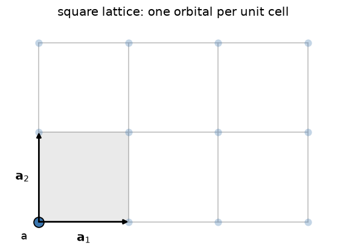
Implementation: tbkit.kspace.KSpace builds \(H(\mathbf{k})\)
directly by Bloch-summing real-space hoppings tagged by which
neighboring unit cell they connect to; get_bands(),
k_path(), and mesh_bands()
diagonalize it at a point, along a path, or over the whole Brillouin
zone. tbkit.kspace.reciprocal_vectors() gives the dual lattice
vectors \(\mathbf{b}_i\) (\(\mathbf{a}_i\cdot\mathbf{b}_j =
2\pi\delta_{ij}\)) that the Brillouin zone is built from.
References: F. Bloch, “Uber die Quantenmechanik der Elektronen in Kristallgittern,” Z. Phys. 52, 555-600 (1929).
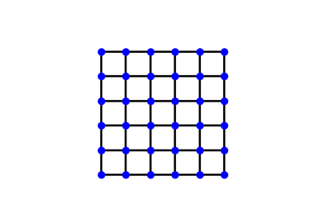
The Square Lattice: Bloch’s Theorem in its Simplest Form
1928/1960 – Bloch Oscillations and the Wannier-Stark Ladder#
Bloch pointed out an immediate, counterintuitive consequence of his own theorem: a uniform force on an electron in a periodic lattice does not uniformly accelerate it, the way it would in free space. Instead, Bloch’s argument and its later formalization by G. Wannier show the electron oscillates periodically in real space, with period \(T_B = 2\pi/F\) (\(\hbar=1\)), while the spectrum of the tilted lattice collapses into an exactly evenly spaced ladder,
the Wannier-Stark ladder, with every eigenstate exponentially localized around its own lattice site by the tilt alone – a deterministic cousin of Anderson localization (1958, below). In real crystals scattering happens on a timescale far shorter than \(T_B\), which is why the effect went unobserved for over 60 years; it took artificial semiconductor superlattices, with a far larger effective lattice constant and hence much shorter \(T_B\), to see it directly.
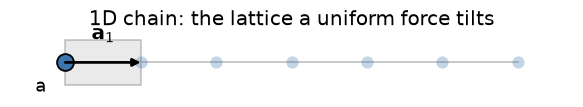
Implementation: a uniform force is exactly a linear onsite potential
gradient, so no dedicated function is needed:
tbkit.system.System.set_onsite_def() applies it directly, and
tbkit.propagation.Propagation (see 1954 below for the general
Tight-Binding framework it operates on) evolves a wavepacket under the
resulting tilted Hamiltonian.
References: F. Bloch, Z. Phys. 52, 555-600 (1929); G. H. Wannier, “Wave functions and effective Hamiltonian for Bloch electrons in an electric field,” Phys. Rev. 117, 432-439 (1960); experimentally confirmed by C. Waschke et al., “Coherent submillimeter-wave emission from Bloch oscillations in a semiconductor superlattice,” Phys. Rev. Lett. 70, 3319-3322 (1993).
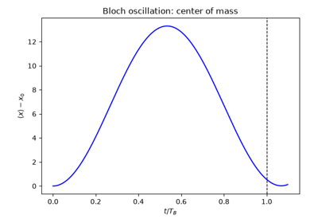
Bloch Oscillations and the Wannier-Stark Ladder
1933 – The Peierls Substitution#
R. Peierls showed how to add a magnetic field to a tight-binding model without abandoning the lattice: each hopping amplitude picks up a phase equal to the line integral of the vector potential along the bond,
with \(\Phi_0 = h/e\) the flux quantum. Because the phase around any closed loop of bonds is gauge-invariant and equals \(2\pi\) times the flux threading it, this recipe reproduces the Aharonov-Bohm and quantum Hall physics below directly on a lattice, without ever solving the continuum Schrodinger equation in a field.
Implementation: tbkit.system.System.set_peierls_phase() applies an
arbitrary phase function (any gauge, any spatial field profile);
set_magnetic_field() is a symmetric-gauge
convenience wrapper for a uniform field, \(\phi_{ij} =
\pi\alpha(x_iy_j - x_jy_i)\) with \(\alpha = B/\Phi_0\).
References: R. Peierls, “Zur Theorie des Diamagnetismus von Leitungselektronen,” Z. Phys. 80, 763-791 (1933).
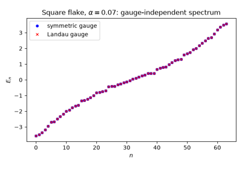
The Peierls Substitution: Flux Through the Plaquettes, in Any Gauge
1947 – Wallace’s Tight-Binding Prediction of Graphene#
Thirty-nine years before it had a name and fifty-seven years before it was isolated, graphene’s electronic structure was already known: P. R. Wallace worked out the tight-binding band structure of a single honeycomb sheet of carbon (as a stepping stone to understanding bulk graphite) and found something no one had seen in a solid before. The two bands touch at the corners of the hexagonal Brillouin zone, and expanding the dispersion around one such point \(\mathbf{K}\) gives, to leading order,
a dispersion that is linear in momentum rather than the usual quadratic \(\hbar^2q^2/2m^*\). Electrons near \(\mathbf{K}\) therefore behave as massless, relativistic (Dirac) particles with an effective speed of light \(v_F = 3ta/2\), decades before “Dirac fermions in condensed matter” became a field in its own right.
The two bands are the two orbitals of the honeycomb unit cell – one on
each of the interpenetrating triangular sublattices 'a' and 'b':
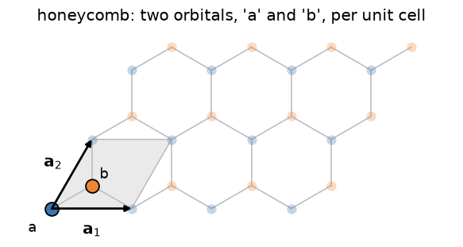
Implementation: no new code – this is the same honeycomb
tbkit.kspace.KSpace Hamiltonian used throughout this chronology,
evaluated at momenta offset from \(\mathbf{K}\) by a small
\(\mathbf{q}\).
References: P. R. Wallace, “The Band Theory of Graphite,” Phys. Rev. 71, 622-634 (1947).
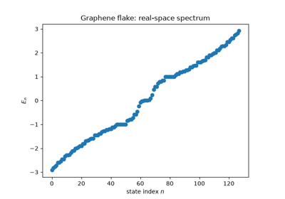
Graphene: Real-Space Flake and Reciprocal-Space Bands
1954 – The Slater-Koster Tight-Binding Framework#
J. Slater and G. Koster showed how to build realistic band structures from a minimal empirical basis: a linear combination of atomic orbitals (LCAO), with hopping matrix elements between neighboring orbitals as fitting parameters rather than computed from first principles. This traded first-principles rigor for tractability and physical transparency, and remains the standard language for model-building in condensed matter theory – it is, in effect, the specification tbkit itself implements: define a unit cell of orbitals, define hoppings between them, and let the code Bloch-sum or diagonalize the result.
Implementation: tbkit.lattice.Lattice (the unit cell and its
translations), tbkit.system.System (finite, real-space
Hamiltonians) and tbkit.kspace.KSpace (periodic, reciprocal-space
Hamiltonians) are exactly this LCAO philosophy, general enough to cover
every other model in this chronology. The Slater-Koster table itself is
tbkit.slater_koster.sk_block() (s, p and d orbitals, generated from
the rotation of the bond frame); tbkit.orbital.OrbitalSystem
(real space, several orbitals and spin per site) and
tbkit.slater_koster.sk_kspace() (Bloch bands) build Hamiltonians
from bond integrals, with the overlap matrix of a non-orthogonal basis
(tbkit.kspace.KSpace.set_overlap()) when it is given.
Example: examples/orbitals/plot_slater_koster.py builds graphene’s
\(sp^3\) bands, confirms that \(p_z\) decouples into Wallace’s
\(\pi\) bands with \(t = V_{pp\pi}\), that the overlap turns them
into \((\epsilon_p\pm t|f|)/(1\pm s|f|)\), and that the real-space
flake and the Bloch model agree.
References: J. C. Slater and G. F. Koster, “Simplified LCAO Method for the Periodic Potential Problem,” Phys. Rev. 94, 1498-1524 (1954).
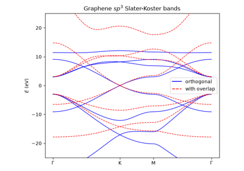
The Slater-Koster Method: Graphene’s sigma and pi Bands
1954-2004 – The Anomalous Hall Effect: from the Anomalous Velocity to the Berry Phase#
Ferromagnets show a Hall voltage far larger than their magnetic field explains. R. Karplus and J. Luttinger traced it in 1954 to the band structure itself: with spin-orbit coupling, an electron driven by an electric field acquires an anomalous velocity perpendicular to it, a property of the perfect crystal rather than of scattering. The idea was contested for decades (skew and side-jump scattering by impurities were put forward instead), until it was recognized as a Berry-phase effect. T. Jungwirth, Q. Niu and A. MacDonald (2002) computed the anomalous Hall conductivity of ferromagnetic semiconductors from the Berry curvature of the occupied bands, and F. D. M. Haldane (2004) showed that its non-quantized part is a property of the Fermi surface. The semiclassical velocity of a band is \(\dot{\mathbf{r}} = \partial_{\mathbf{k}}E_n - \dot{\mathbf{k}}\times\boldsymbol\Omega_n\), and the intrinsic conductivity at any Fermi level is the curvature of the occupied states,
the TKNN Chern number (1982, below) when \(E_F\) lies in a gap, and a continuous, non-quantized function of \(E_F\) inside the bands.
Implementation: tbkit.kspace.KSpace.hall_conductivity() evaluates
the Kubo formula in the form that stays finite where bands touch, with
\(\partial H/\partial\mathbf{k}\) built analytically from the
hoppings, at any Fermi level and temperature, in 2D and 3D, with the
adaptive mesh refinement of Wang, Yates, Souza and Vanderbilt (2006).
tbkit.kpm.hall_conductivity() computes the same quantity in real
space, for disordered samples of tens of thousands of sites, from the
Chebyshev expansion of the Kubo-Bastin formula (Garcia, Covaci and
Rappoport 2015), with the velocities of
finite_velocity() on a torus.
References: R. Karplus and J. M. Luttinger, “Hall Effect in Ferromagnetics,” Phys. Rev. 95, 1154-1160 (1954); T. Jungwirth, Q. Niu, and A. H. MacDonald, “Anomalous Hall Effect in Ferromagnetic Semiconductors,” Phys. Rev. Lett. 88, 207208 (2002); F. D. M. Haldane, “Berry Curvature on the Fermi Surface: Anomalous Hall Effect as a Topological Fermi-Liquid Property,” Phys. Rev. Lett. 93, 206602 (2004); X. Wang, J. R. Yates, I. Souza, and D. Vanderbilt, “Ab initio calculation of the anomalous Hall conductivity by Wannier interpolation,” Phys. Rev. B 74, 195118 (2006); J. H. Garcia, L. Covaci, and T. G. Rappoport, “Real-Space Calculation of the Conductivity Tensor for Disordered Topological Matter,” Phys. Rev. Lett. 114, 116602 (2015); N. Nagaosa, J. Sinova, S. Onoda, A. H. MacDonald, and N. P. Ong, “Anomalous Hall effect,” Rev. Mod. Phys. 82, 1539-1592 (2010) (a review).
Examples: examples/hall_effects/plot_anomalous_hall_effect.py
confirms that \(\sigma_{xy}(E_F)\) of the Haldane model equals the
Chern number throughout the gap, in both phases, and takes non-quantized
values in the bands – nonzero even in the trivial phase.
examples/hall_effects/plot_anomalous_hall_disorder.py finds the same
plateau with the kernel polynomial method on a 20,000-orbital torus, and
follows it as onsite disorder fills the gap with localized states, until
strong disorder destroys it.
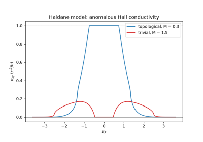
The Anomalous Hall Effect: from the Anomalous Velocity to the Berry Phase
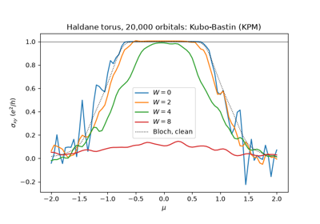
The Anomalous Hall Effect in Real Space: a Disordered Chern Insulator
1957/1988 – The Landauer Formula and Quantized Conductance#
R. Landauer (1957), then M. Buttiker (1986), recast electrical conductance as a scattering problem: a phase-coherent conductor between two reservoirs has the conductance \(G = \frac{e^2}{h}T(E_F)\), with \(T\) the transmission probability summed over the transverse modes of the leads,
in the form of Caroli et al., with \(\Sigma_l\) the self-energy of lead \(l\). A perfect wire transmits each open mode fully, so its conductance counts them. In 1988 van Wees et al. and Wharam et al. saw exactly this in a quantum point contact: as a gate narrowed the constriction, the conductance fell in steps of \(2e^2/h\).
Implementation: tbkit.transport – semi-infinite leads from their
cell Hamiltonian (lead_from_kspace() cuts them
from any 1D model, e.g. a ribbon), surface Green’s functions by the
Lopez Sancho-Rubio decimation (surface_green()),
and Transport for the self-energies and the
transmission of a device (System.ham).
References: R. Landauer, “Spatial Variation of Currents and Fields Due to Localized Scatterers in Metallic Conduction,” IBM J. Res. Dev. 1, 223-231 (1957); M. Buttiker, “Four-Terminal Phase-Coherent Conductance,” Phys. Rev. Lett. 57, 1761-1764 (1986); B. J. van Wees et al., “Quantized Conductance of Point Contacts in a Two-Dimensional Electron Gas,” Phys. Rev. Lett. 60, 848-850 (1988); D. A. Wharam et al., J. Phys. C 21, L209 (1988).
Example: examples/transport/plot_landauer_conductance.py confirms
that a clean strip transmits exactly its number of open modes at every
energy, and that a saddle-shaped point contact shows conductance
plateaus at 1, 2, 3 and 4 \(e^2/h\) (per spin) as the gate closes it.
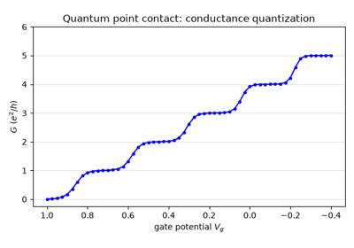
The Landauer Formula: Quantized Conductance of a Point Contact
1957 – BCS Theory and the Self-Consistent Gap Equation#
J. Bardeen, L. N. Cooper and J. R. Schrieffer explained superconductivity by a condensate of Cooper pairs, whose gap solves a self-consistent gap equation, \(1 = \frac{V}{N}\sum_{\mathbf{k}}\tanh(E_{\mathbf{k}}/2T)/2E_{\mathbf{k}}\). At weak coupling its solution is universal: \(\Delta(T)\) vanishes as \(\sqrt{1-T/T_c}\) at \(T_c\), with \(\Delta(0) = 1.764\,k_BT_c\) for every material. P.-G. de Gennes (1966) recast it in real space, as the self-consistency of the Bogoliubov-de Gennes Hamiltonian site by site, \(\Delta_i = V\langle c_{i\downarrow}c_{i\uparrow}\rangle\) – the tool of choice for vortices, interfaces, disorder and the proximity effect.
Implementation: tbkit.bdg.s_wave_gap() (real-space s-wave gap
equation, uniform or site-dependent attraction, any temperature).
References: J. Bardeen, L. N. Cooper, and J. R. Schrieffer, “Theory of Superconductivity,” Phys. Rev. 108, 1175-1204 (1957); P.-G. de Gennes, Superconductivity of Metals and Alloys (Benjamin, 1966).
Example: examples/superconductivity/plot_bcs_gap_equation.py
confirms, on a clean \(12\times12\) torus, a uniform real-space gap
equal to the k-space BCS solution at every temperature, a \(T_c\)
(from the linear vanishing of \(\Delta^2\)) within 1% of the
linearized gap equation, \(\Delta(0)/T_c = 1.764\) to 2%, and the
proximity effect of a half-superconducting chain.
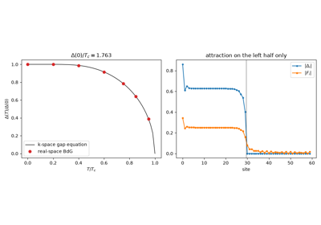
The BCS Gap Equation: Delta(T) and the Universal Ratio Delta(0)/T_c = 1.764
1958 – Anderson Localization#
P. Anderson showed that quenched, random disorder is not a small perturbative correction to a metal’s conductivity but can halt transport outright: interference between all the scattering paths off a random potential exponentially localizes the electronic eigenstates, turning a metal into an insulator with no gap and no broken symmetry. Anderson’s own argument established this for strong enough disorder; the scaling theory of Abrahams, Anderson, Licciardello, and Ramakrishnan sharpened it two decades later to the statement that in one and two dimensions every state localizes at any nonzero disorder strength, so that only in three dimensions is there a genuine metal-insulator transition at finite disorder. A localized state’s character is diagnosed by its Inverse Participation Ratio,
which is \(O(1/N)\) for a state spread over all \(N\) sites (extended) and \(O(1)\) for a state pinned to a handful of them (localized).
Implementation: tbkit.system.System.set_onsite_dis() and
set_hopping_dis() add uniform random disorder to
the onsite energies/hoppings; get_ipr() computes
\(\mathrm{IPR}_n\) for every eigenstate.
References: P. W. Anderson, “Absence of Diffusion in Certain Random Lattices,” Phys. Rev. 109, 1492-1505 (1958); E. Abrahams, P. W. Anderson, D. C. Licciardello, and T. V. Ramakrishnan, “Scaling Theory of Localization,” Phys. Rev. Lett. 42, 673-676 (1979).
1959 – The Aharonov-Bohm Effect#
Y. Aharonov and D. Bohm pointed out a startling consequence of quantum mechanics: a charged particle’s phase is affected by the vector potential \(\mathbf{A}\) even in a region where the magnetic field \(\mathbf{B}=\nabla\times\mathbf{A}\) itself vanishes identically – only the enclosed flux \(\Phi = \oint\mathbf{A}\cdot d\mathbf{l}\) matters, and only modulo the flux quantum \(\Phi_0\). On a ring threaded by flux \(\Phi\), this makes the energy spectrum exactly periodic in \(\Phi\) with period \(\Phi_0\).
A ring is not a Bravais lattice, so its sites are placed by hand – the flux that matters is the one enclosed by the polygon they span:
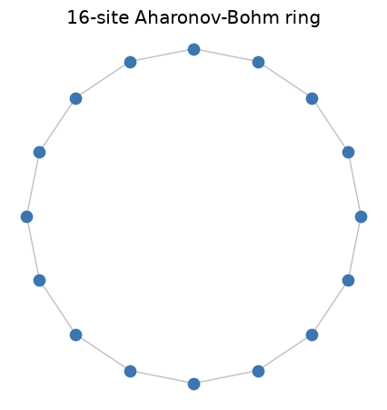
Implementation: directly reproduced by
tbkit.system.System.set_magnetic_field() (see 1933 above) applied to
a ring-shaped Lattice.
References: Y. Aharonov and D. Bohm, “Significance of Electromagnetic Potentials in the Quantum Theory,” Phys. Rev. 115, 485-491 (1959).
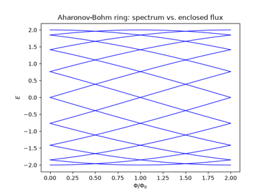
Aharonov-Bohm Ring: A Magnetic Field on a Lattice
1963 – The Hubbard Model#
J. Hubbard – with M. Gutzwiller and J. Kanamori, the same year – reduced interacting electrons in narrow bands to their bare bones: hopping between neighbouring sites, and a repulsion \(U\) between two electrons on the same site,
It is the reference model of itinerant magnetism and of the Mott insulator, and, doped, a candidate model of high-temperature superconductivity. Its simplest approximation lets each spin move in the mean density of the other (unrestricted Hartree-Fock). On graphene flakes it predicts magnetic zigzag edges, each edge ferromagnetic and neighbouring edges opposite (Fujita et al. 1996; Son, Cohen and Louie 2006).
Implementation: tbkit.meanfield.hubbard_mean_field(), the
self-consistent collinear mean field of any System Hamiltonian, at zero
or finite temperature.
References: J. Hubbard, “Electron Correlations in Narrow Energy Bands,” Proc. R. Soc. Lond. A 276, 238-257 (1963); M. C. Gutzwiller, Phys. Rev. Lett. 10, 159 (1963); J. Kanamori, Prog. Theor. Phys. 30, 275 (1963); M. Fujita, K. Wakabayashi, K. Nakada, and K. Kusakabe, J. Phys. Soc. Jpn. 65, 1920 (1996).
Example: examples/correlations/plot_hubbard_edge_magnetism.py
confirms that a 216-site zigzag hexagon at \(U = 2|t|\) has every
outer edge atom magnetized, up on one sublattice and down on the other,
with a total \(S_z = 0\); and that a finite flake needs \(U\) above
a threshold that shrinks as its edges get longer.
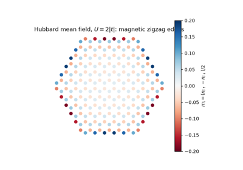
The Hubbard Model: Magnetism of Graphene’s Zigzag Edges
1930/2005 – Landau Levels: From Free Electrons to Graphene’s Dirac Fermions#
L. Landau showed in 1930 that a charged particle confined to a plane under a uniform perpendicular magnetic field has a spectrum that collapses from a continuum into a ladder of discrete, macroscopically degenerate levels – Landau levels – each level’s degeneracy set purely by the number of flux quanta threading the sample. Applied to a lattice via the Peierls substitution above, at weak field (magnetic length much larger than the lattice spacing) the same quantization survives near a band’s parabolic edge, evenly spaced by the cyclotron frequency \(\omega_c = eB/m^*\),
Seventy-five years later, K. Novoselov, A. Geim, and coworkers, and independently Y. Zhang, Y.-W. Tan, H. Stormer, and P. Kim, measured graphene’s Landau levels directly and found something Landau’s original theory never anticipated: because graphene’s low-energy electrons obey Wallace’s linear (massless-Dirac) dispersion above rather than the usual parabolic one, the ladder is spaced by \(\sqrt{n}\) rather than \(n\), and centered on an exact zero-energy level present at any field strength – a direct experimental fingerprint, via the resulting anomalous quantum Hall sequence, that graphene’s charge carriers behave as massless Dirac fermions rather than ordinary electrons.
The two ladders below are the same field applied to two different finite flakes – a square lattice (parabolic band edge) and a graphene flake (linear Dirac cone):
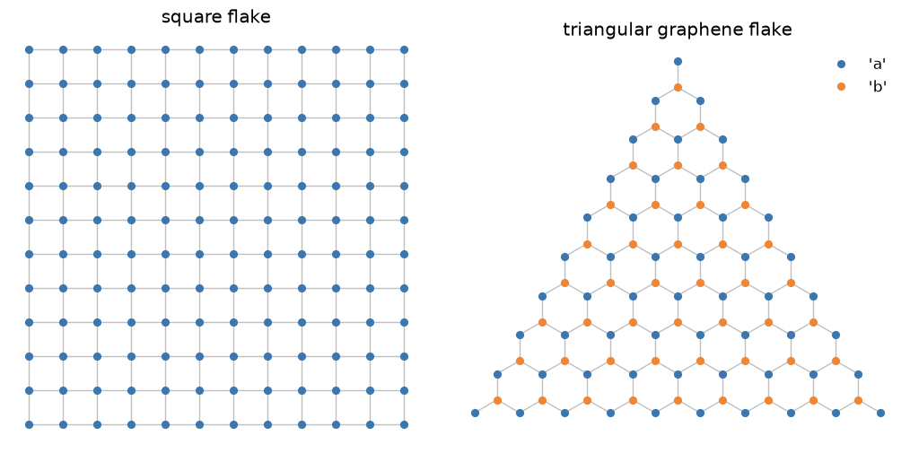
Implementation: both ladders come from exactly the same
tbkit.system.System.set_magnetic_field() used throughout this
chronology, applied to two different finite flakes: a square lattice
(parabolic band edge) and a graphene flake built from
tbkit.graphene.GrapheneLattice (linear Dirac dispersion). No
dedicated Landau-level function is needed – the quantization is an
emergent, weak-field limit of the same Peierls-substituted Hamiltonian
Hofstadter’s full flux sweep uses below.
References: L. Landau, “Diamagnetismus der Metalle,” Zeitschrift fur Physik 64, 629-637 (1930); K. S. Novoselov, A. K. Geim, S. V. Morozov, D. Jiang, M. I. Katsnelson, I. V. Grigorieva, S. V. Dubonos, and A. A. Firsov, “Two-Dimensional Gas of Massless Dirac Fermions in Graphene,” Nature 438, 197-200 (2005); Y. Zhang, Y.-W. Tan, H. L. Stormer, and P. Kim, “Experimental Observation of the Quantum Hall Effect and Berry’s Phase in Graphene,” Nature 438, 201-204 (2005).
Example: examples/magnetic_field/plot_landau_levels.py builds a 60x60 square-lattice
flake and a 1936-site triangular graphene flake at the same weak flux,
confirms exact particle-hole symmetry in both (the Peierls substitution
preserves bipartite chiral symmetry), confirms the square lattice’s
lowest 72 nearly-degenerate states average to within 15% of the
predicted \(E_0+\omega_c/2\), and confirms graphene’s clean n=1
plateau (102 states) matches the predicted \(v_F\sqrt{2eB}\) to
within 1%.
1973/1988 – Frustration and the 120-Degree Order of the Triangular Antiferromagnet#
On a triangle, three antiparallel spins cannot all be satisfied. G. Wannier (1950) showed that the Ising triangular antiferromagnet never orders; P. W. Anderson (1973) proposed that the quantum Heisenberg one is a resonating-valence-bond spin liquid; D. A. Huse and V. Elser (1988), and later numerical work, found that it orders after all, non-collinearly: the moments of the three sublattices point 120 degrees apart, with zero total moment. Frustration has remained the main route to spin liquids, and the half-filled triangular Hubbard model its simplest itinerant version.
Implementation: tbkit.meanfield.hubbard_mean_field_noncollinear()
(spin-rotation invariant Hartree-Fock: the whole onsite spin density
matrix, moments in any direction, spin-orbit Hamiltonians accepted; with
moments along \(z\) it reduces to
hubbard_mean_field()).
References: G. H. Wannier, Phys. Rev. 79, 357 (1950); P. W. Anderson, “Resonating valence bonds: A new kind of insulator?,” Mater. Res. Bull. 8, 153-160 (1973); D. A. Huse and V. Elser, Phys. Rev. Lett. 60, 2531 (1988); H. R. Krishnamurthy, C. Jayaprakash, S. Sarker, and W. Wenzel, Phys. Rev. Lett. 64, 950 (1990).
Example: examples/correlations/plot_noncollinear_120_degree_order.py
confirms the 120-degree state from random starts (neighbouring moments at
\(\cos = -1/2\), zero total moment, coplanar), below the collinear
up-up-down state, and the Heisenberg limit \(-1.5\,t^2/U\) (versus
\(-\frac43t^2/U\)) per bond at \(U = 40t\).
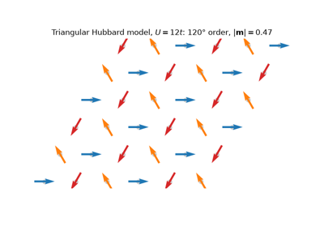
Frustrated Magnetism: the 120-Degree Order of the Triangular Hubbard Model
1976 – Hofstadter’s Butterfly#
D. Hofstadter solved the tight-binding square lattice threaded by a continuously varying flux per plaquette \(\alpha = p/q\) (in units of \(\Phi_0\)) and found a spectrum of startling, self-similar complexity: at each rational flux \(p/q\), the band splits into \(q\) sub-bands, and plotting energy against \(\alpha\) traces out a fractal, recursively structured pattern now known as Hofstadter’s butterfly – one of the earliest and most famous numerically-discovered fractals in physics, and a direct illustration of how sensitively a Bloch spectrum can depend on a magnetic field via the Peierls substitution above.
Implementation: the same tbkit.system.System.set_magnetic_field()
used for the Aharonov-Bohm ring, swept continuously over a finite 2D
flake.
References: D. R. Hofstadter, “Energy levels and wave functions of Bloch electrons in rational and irrational magnetic fields,” Phys. Rev. B 14, 2239-2249 (1976).
1979 – The Scaling Theory of Localization#
Abrahams, Anderson, Licciardello and Ramakrishnan – the “gang of four” – argued that the conductance \(g\) of a disordered sample flows, as its size \(L\) grows, by a single scaling function \(\beta(g) = d\ln g/d\ln L\). It is negative for every \(g\) in one and two dimensions – every state localizes, at any disorder – but changes sign in three: a genuine metal-insulator transition, at a critical disorder \(W_c \approx 16.5\,t\) for the Anderson model of the cubic lattice (onsite energies uniform in \([-W/2, W/2]\)). The transition is visible in the level statistics: extended states repel (random-matrix statistics), localized ones do not (Poisson statistics), and the mean ratio of consecutive level spacings flows towards the first in the metal and the second in the insulator.
Implementation: 3D lattices (unit_cell and prim_vec as 3-tuples:
tbkit.lattice.Lattice, tbkit.system.System,
tbkit.kspace.KSpace); beyond System.dense_max sites, the
neighbours come from a k-d tree, and
get_eig_sparse() targets the states near an
energy.
References: E. Abrahams, P. W. Anderson, D. C. Licciardello, and T. V. Ramakrishnan, “Scaling Theory of Localization: Absence of Quantum Diffusion in Two Dimensions,” Phys. Rev. Lett. 42, 673-676 (1979); B. I. Shklovskii et al., Phys. Rev. B 47, 11487 (1993); V. Oganesyan and D. Huse, Phys. Rev. B 75, 155111 (2007).
Example: examples/three_dimensions/plot_anderson_transition.py
confirms random-matrix statistics at weak disorder and near-Poisson
statistics at strong disorder, and that the curves of two sizes cross
between \(W = 12t\) and \(20t\), around \(W_c\).
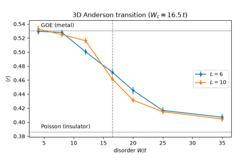
The Scaling Theory of Localization: the 3D Anderson Transition
1979 – The Su-Schrieffer-Heeger (SSH) Model#
Su, Schrieffer, and Heeger showed that a 1D dimerized chain – alternating intracell (\(v\)) and intercell (\(w\)) bonds, modeling polyacetylene – hosts domain-wall solitons. Cut open into a finite chain, the same physics produces a pair of protected, exponentially localized zero-energy states, one at each end, whenever \(w>v\). It is the earliest and simplest example of the bulk-boundary correspondence that would come to define topological band theory: a bulk property predicting the existence of boundary modes.
Which phase the chain is in is visible in the geometry: it is set by whether the chain is cut so that the weak bond or the strong one sits at the end.
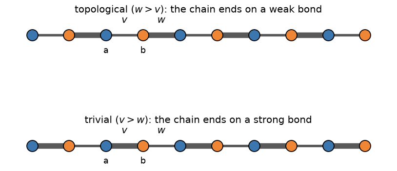
The bulk gap \(2\min_k|v+we^{-ik}| = 2|v-w|\) closes only at \(v=w\); for \(v<w\) the chain is topological (protected zero-energy edge modes under open boundaries), and for \(v>w\) it is trivial (no edge modes).
Implementation: built directly from tbkit.kspace.KSpace (the
Bloch form above) and tbkit.system.System.set_hopping_manual() (the
open, real-space chain exposing the edge modes) – no dedicated SSH
function is needed, since the general hopping-list framework already
covers it exactly.
References: W. P. Su, J. R. Schrieffer, and A. J. Heeger, “Solitons in Polyacetylene,” Phys. Rev. Lett. 42, 1698-1701 (1979).
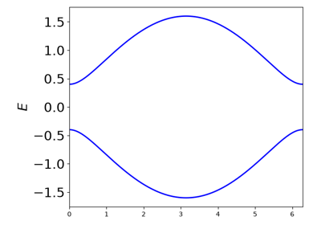
The SSH Model: Bulk-Boundary Correspondence
1980 – The Quantum Metric#
J. P. Provost and G. Vallee showed that the manifold of quantum states carries a natural metric – how distinguishable two neighbouring states are. For a Bloch band it combines with the Berry curvature into the quantum geometric tensor,
The metric bounds the curvature, \(\sqrt{\det g}\ge|\Omega_{xy}|/2\), so a Chern band has a minimal quantum geometry; its integral bounds the spread of the Wannier functions, and it sets the superfluid weight of flat-band superconductors (Peotta and Torma, 2015).
Implementation: tbkit.kspace.KSpace.quantum_geometric_tensor().
References: J. P. Provost and G. Vallee, “Riemannian Structure on Manifolds of Quantum States,” Commun. Math. Phys. 76, 289-301 (1980); N. Marzari and D. Vanderbilt, Phys. Rev. B 56, 12847 (1997); R. Roy, Phys. Rev. B 90, 165139 (2014).
Example: examples/topology/plot_quantum_geometry.py maps the metric
and the curvature of the Haldane model’s lower band, confirms the bound
at every k-point, and recovers the Chern number from the curvature.
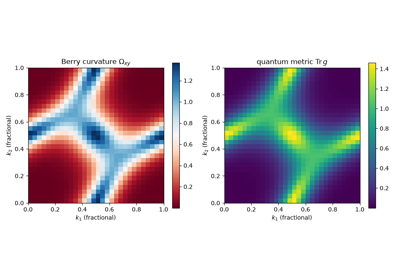
The Quantum Metric: The Geometry of a Bloch Band
1981/2000 – The Shift Current and the Bulk Photovoltaic Effect#
Ferroelectrics lit uniformly produce a DC current with no junction (Glass, von der Linde and Negran 1974): the bulk photovoltaic effect of crystals without an inversion centre. Baltz and Kraut (1981) identified its main part as a shift current, and Sipe and Shkrebtii (2000) gave it its modern form: an electron excited from band \(n\) to band \(m\) moves by the shift vector \(R^{a,b}_{nm} = \partial_a\phi^b_{nm} - A^a_{nn} + A^a_{mm}\), a difference of Berry connections, and
The current is thus a property of the band geometry, not only of the absorption, and it depends on where the orbitals sit in the cell (Ibanez-Azpiroz, Tsirkin and Souza 2018).
Implementation: tbkit.optics.shift_current() (any component
\(\sigma^{abc}\) of a 2D KSpace) and
tbkit.optics.generalized_derivative() (the covariant derivatives
\(r^b_{nm;a}\) as a sum over states, with the exact second
derivatives of \(H\)).
References: A. M. Glass, D. von der Linde, and T. J. Negran, “High-voltage bulk photovoltaic effect and the photorefractive process in LiNbO3,” Appl. Phys. Lett. 25, 233 (1974); R. von Baltz and W. Kraut, “Theory of the bulk photovoltaic effect in pure crystals,” Phys. Rev. B 23, 5590 (1981); J. E. Sipe and A. I. Shkrebtii, “Second-order optical response in semiconductors,” Phys. Rev. B 61, 5337 (2000); J. Ibanez-Azpiroz, S. S. Tsirkin, and I. Souza, “Ab initio calculation of the shift photocurrent by Wannier interpolation,” Phys. Rev. B 97, 245143 (2018).
Example: examples/optics/plot_bulk_photovoltaic_shift_current.py
computes the shift current of graphene with a staggered potential
(boron nitride’s model) and confirms the \(C_{3v}\) selection rules
\(\sigma^{yyy} = -\sigma^{yxx} = -\sigma^{xxy}\),
\(\sigma^{xxx} = 0\), that nothing flows below the gap, that the
current reverses with the inversion image of the crystal
(\(m\to-m\)), and that it vanishes in centrosymmetric graphene.
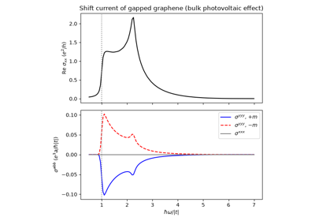
The Bulk Photovoltaic Effect: the Shift Current of Gapped Graphene
1981 – The Recursive Green’s Function Method#
The transmission of a disordered sample needs its Green’s function between the two leads, and a dense inversion costs \(N^3\) for \(N\) sites. Thouless and Kirkpatrick (1981), Lee and Fisher (1981) and MacKinnon and Kramer (1981, 1983) cut a quasi-1D sample into slices, each coupled to its neighbours only, and added them one at a time,
at a cost linear in the length. It made the conductance of long bars, and the localization lengths behind one-parameter scaling, computable, and it remains the workhorse of quantum-transport codes.
Implementation: tbkit.transport.RecursiveTransport (sparse
Hamiltonians, slices_from_positions(); the
transmission, its eigenvalues and the Fano factor).
References: D. J. Thouless and S. Kirkpatrick, “Conductivity of the disordered linear chain,” J. Phys. C 14, 235 (1981); P. A. Lee and D. S. Fisher, “Anderson Localization in Two Dimensions,” Phys. Rev. Lett. 47, 882 (1981); A. MacKinnon and B. Kramer, “One-Parameter Scaling of Localization Length and Conductance in Disordered Systems,” Phys. Rev. Lett. 47, 1546 (1981); A. MacKinnon, “The calculation of transport properties and density of states of disordered solids,” Z. Phys. B 59, 385 (1985); D. J. Thouless, in Ill-Condensed Matter, edited by R. Balian et al. (North-Holland, 1979).
Example: examples/transport/plot_recursive_green_function.py
confirms that the recursive and the dense transmissions agree, finds the
localization length of a disordered chain from \(\langle\ln T\rangle
= -2L/\xi\) within 10% of Thouless’s \(24(4t^2-E^2)/W^2\) (chains up
to 500 sites, 300 samples each), and computes the transmission of a
100 000-site wire whose dense matrix would not fit in memory.
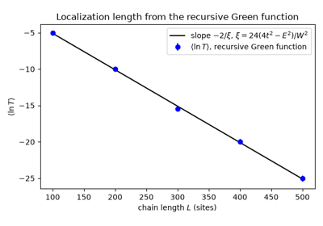
The Recursive Green’s Function: Localization Length of Long Disordered Wires
1982 – The TKNN Invariant#
Thouless, Kohmoto, Nightingale, and den Nijs (TKNN) showed that a 2D band’s quantized Hall conductance is a topological invariant: the integral of its Berry curvature \(\Omega(\mathbf{k})\) over the Brillouin zone,
now called the (first) Chern number. Because \(C\) can only change when a bulk energy gap closes, it is invariant under any smooth, gap-preserving perturbation – the single idea that turned “band theory” into “topological band theory,” and the direct theoretical explanation for why the integer quantum Hall effect (measured by von Klitzing two years earlier) is quantized with such extraordinary precision.
Implementation: tbkit.kspace.magnetic_supercell() builds the
magnetic unit cell of a lattice threaded by a rational flux
\(p/q\) per unit cell, whose bands are the Hofstadter subbands;
tbkit.kspace.KSpace.berry_curvature() computes
\(\Omega(\mathbf{k})\) over a Brillouin-zone mesh by the
gauge-invariant Fukui-Hatsugai-Suzuki lattice method (the phase of a
product of overlaps between neighboring-plaquette occupied subspaces,
which needs no smooth gauge choice for \(u_{n\mathbf{k}}\) at all);
chern_number() is its sum divided by
\(2\pi\), returning an integer to within the mesh resolution.
References: D. J. Thouless, M. Kohmoto, M. P. Nightingale, and M. den Nijs, “Quantized Hall Conductance in a Two-Dimensional Periodic Potential,” Phys. Rev. Lett. 49, 405-408 (1982).
Example: examples/topology/plot_tknn_hofstadter.py confirms that
the Chern numbers of the square lattice’s Hofstadter subbands, at fluxes
1/3, 1/5, 2/5 and 3/7, are those of the TKNN Diophantine equation
\(r = qs_r + pt_r\).
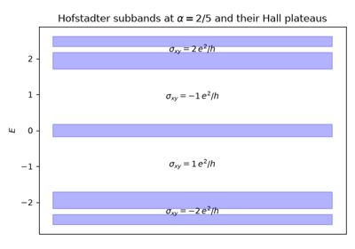
TKNN: The Quantized Hall Conductance of the Hofstadter Bands
1983 – The Thouless Quantum Pump#
Thouless asked what the TKNN invariant means for a 1D system rather than a 2D one, and found a direct physical answer: if a 1D insulator’s Hamiltonian is cycled slowly and periodically through a parameter \(\phi\) (a pump cycle) back to itself, the charge transported across any cross-section over one full cycle is exactly quantized,
an integer number of electrons per cycle, regardless of how the cycle is driven – provided the bulk gap never closes. The reason is exactly the TKNN argument one dimension down: treating the pump parameter \(\phi\) as a second, synthetic crystal momentum turns the 1D pump into a 2D Chern insulator on the \((k,\phi)\) torus, with \(Q\) equal to its Chern number. The idea now underlies “topological pumps” realized with cold atoms in modulated optical lattices, decades after the original proposal.
Implementation: no new code – a pump is simply an ordinary
tbkit.kspace.KSpace Bloch Hamiltonian built with the pump
parameter as a second reciprocal direction, so
chern_number() (1982, above) applies directly
and needs no special-casing for the synthetic-dimension trick.
References: D. J. Thouless, “Quantization of particle transport,” Phys. Rev. B 27, 6083-6087 (1983); M. J. Rice and E. J. Mele, “Elementary Excitations of a Linearly Conjugated Diatomic Polymer,” Phys. Rev. Lett. 49, 1455-1459 (1982) (the pumped model itself).
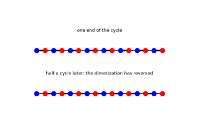
The Thouless Quantum Pump (Rice-Mele Model)
1984 – Diabolical Points: Conical Intersections and the Sign of the Eigenvector#
When can two levels of a quantum system be degenerate? Von Neumann and Wigner (1929) had counted the conditions: two for a real symmetric Hamiltonian, three for a complex Hermitian one. Without a symmetry, a degeneracy therefore does not occur along a one-parameter path – the levels avoid crossing – but at isolated points of a two-parameter family. M. Berry and M. Wilkinson found such points numerically in the spectra of triangular billiards, varying the triangle’s two angles, and named them diabolical points: near one, the two energy sheets form a double cone, a “diabolo”. The same year Berry showed that such a degeneracy is the source of a geometric phase: the real eigenvector of either level changes sign after one loop around it, a phase \(\pi\) that no choice of gauge can remove. Graphene’s Dirac points (1947, above) are diabolical points pinned by symmetry; Berry and Wilkinson’s are accidental, and move when the system is deformed.
Implementation: tbkit.exceptional.encircle() carries an eigenvector
around a loop in any two-parameter family (a KSpace, or a callable
returning a matrix) by parallel transport, and returns the phase it
comes back with; tbkit.exceptional.vorticity() and
discriminant_winding() are 0 around a diabolical
point, which tells it apart from an exceptional point (2015-2018, below).
References: M. V. Berry and M. Wilkinson, “Diabolical points in the spectra of triangles,” Proc. R. Soc. Lond. A 392, 15-43 (1984); M. V. Berry, “Quantal phase factors accompanying adiabatic changes,” Proc. R. Soc. Lond. A 392, 45-57 (1984); J. von Neumann and E. P. Wigner, “Über das Verhalten von Eigenwerten bei adiabatischen Prozessen,” Phys. Z. 30, 467 (1929).
Example: examples/topology/plot_diabolical_points.py builds a
10-site triangular flake whose hoppings along two bond directions play
the part of the triangle’s angles, with a potential that breaks every
mirror symmetry. It locates a degeneracy of levels 5 and 6 off the
symmetric lines, confirms the conical dispersion (gap proportional to the
distance in every direction), the avoided crossings along lines that miss
it, the sign change of the eigenvector (phase \(\pi\) around it, 0
around a loop that misses it, and vorticity 0), and that the point moves
continuously, without disappearing, as the potential is changed.
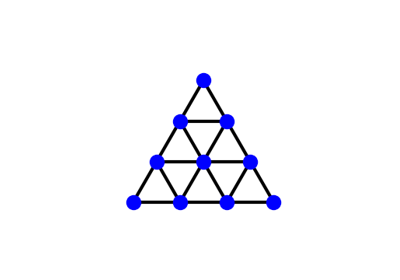
Diabolical Points: Conical Intersections in a Two-Parameter Family
1988 – The Haldane Model#
D. Haldane asked whether the integer quantum Hall effect requires a net magnetic field at all – and showed it does not. His model threads complex second-neighbor hopping \(t_2e^{i\phi}\) through a honeycomb lattice in a pattern with zero net flux per unit cell (opposite chirality on the two sublattices), yet nonzero local curvature that breaks time-reversal symmetry. The result is a Chern insulator, \(C=\pm1\), from lattice-scale “orbital magnetism” alone – the first concrete example of what is now called the quantum anomalous Hall effect, and the direct template for the Kane-Mele model below.
Implementation: built directly from tbkit.kspace.KSpace’s
general complex-hopping machinery (no dedicated function needed): real
nearest-neighbor hopping plus complex, sublattice-alternating
next-nearest-neighbor hopping, evaluated with
chern_number().
References: F. D. M. Haldane, “Model for a Quantum Hall Effect without Landau Levels,” Phys. Rev. Lett. 61, 2015-2018 (1988).
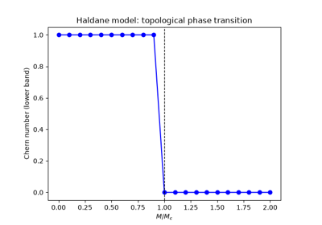
The Haldane Model: Berry Curvature and a Topological Phase Transition
1988 – Buttiker’s Edge Channels and the Quantized Hall Resistance#
Buttiker (1986) wrote the currents of a phase-coherent conductor with any number of leads as \(I_p = \frac{e^2}{h}\sum_qG_{pq}V_q\), with \(G_{pq} = -T_{pq}\) from the transmissions between leads, and described voltage probes as leads drawing no net current. In 1988 he applied it to the quantum Hall effect: \(\nu\) chiral edge channels, one per filled Landau level, carry the electrons from each contact to the next one downstream without backscattering, and the four-terminal resistances are \(R_{xy} = h/\nu e^2\) and \(R_{xx} = 0\) exactly, whatever the shape of the sample and of its contacts. The picture explained the precision of von Klitzing’s plateaus and guided the edge-state experiments that followed.
Implementation: tbkit.transport.Transport.conductance_matrix(),
transmission_matrix(),
four_terminal_resistance(),
bond_currents() and
local_currents().
References: M. Buttiker, “Four-Terminal Phase-Coherent Conductance,” Phys. Rev. Lett. 57, 1761 (1986); M. Buttiker, “Absence of backscattering in the quantum Hall effect in multiprobe conductors,” Phys. Rev. B 38, 9375 (1988); K. von Klitzing, G. Dorda, and M. Pepper, “New Method for High-Accuracy Determination of the Fine-Structure Constant Based on Quantized Hall Resistance,” Phys. Rev. Lett. 45, 494 (1980).
Example: examples/transport/plot_hall_bar_edge_channels.py builds a
six-terminal square-lattice Hall bar in a field and confirms
\(R_{xy} = h/\nu e^2\) for \(\nu = 1, 2, 3\) with
\(R_{xx} = 0\) (to \(10^{-5}\)), current conservation of the
conductance matrix, and that on the first plateau the current injected by
the source flows along one edge.
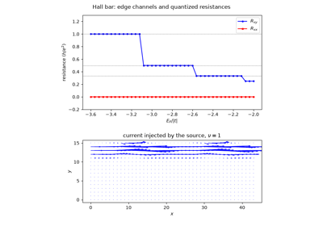
Buttiker’s Edge Channels: the Quantized Resistances of a Hall Bar
1989 – The Zak Phase#
J. Zak showed that the Berry phase of a Bloch band carried once across the Brillouin zone, \(\gamma = \oint\mathbf{A}\cdot d\mathbf{k}\), is a property of the whole band, quantized to 0 or \(\pi\) by inversion symmetry – and that \(\gamma/2\pi\) locates the centre of its Wannier functions in the cell. Through King-Smith and Vanderbilt (1993) it became the modern theory of electric polarization, and its matrix generalization, the Wilson loop, the standard tool for computing topological invariants.
Implementation: tbkit.kspace.KSpace.berry_phase(),
wannier_centers() (the eigenphases of the
discrete Wilson loop, with the orbital positions included) and
wannier_flow() (hybrid Wannier centres across
the zone).
References: J. Zak, “Berry’s Phase for Energy Bands in Solids,” Phys. Rev. Lett. 62, 2747-2750 (1989); R. D. King-Smith and D. Vanderbilt, Phys. Rev. B 47, 1651 (1993).
Example: examples/topology/plot_zak_phase.py confirms that the SSH
chain’s Wannier centre sits on the strong bond – at \(1/4\) for
\(v > w\), \(3/4\) for \(w > v\) – a jump of the Zak phase by
\(\pi\) at the transition.
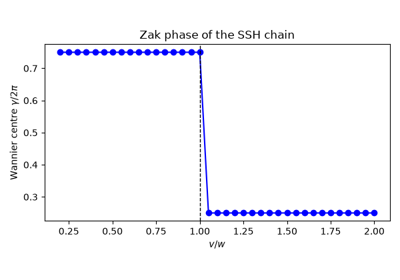
The Zak Phase: Where the SSH Chain’s Electrons Sit
1989 – Lieb’s Theorem and Flat-Band Lattices#
E. Lieb proved one of the few rigorous, non-perturbative results about the many-body Hubbard problem: on a bipartite lattice with unequal numbers of sites on its two sublattices \(A\) and \(B\), the half-filled ground state has total spin exactly \(S = \bigl||A|-|B|\bigr|/2\), for any repulsion \(U>0\) – ferrimagnetic order, with a net moment, derived without approximation. The lattice Lieb used to prove it – a square lattice with an extra site at the midpoint of every bond, so three sites per unit cell split two-to-one between the sublattices – turns out to have an exactly flat (dispersionless) single-particle band already at the noninteracting level, from destructive interference confining an eigenstate to a single 4-site plaquette with zero amplitude everywhere else; the kagome lattice shares the same flat-band mechanism on a different geometry. A flat band’s macroscopic, noninteracting degeneracy is exactly the extreme limit in which arbitrarily weak interactions dominate – the underlying reason flat-band lattices remain an active route to engineered strong correlation and (on kagome, with further ingredients) topological flat-band physics.
Both lattices owe their flat band to the same thing – a unit cell with more sites than the number of independent ways an electron can leave it:
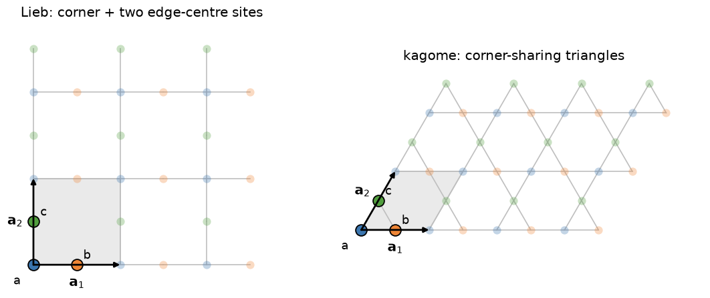
Implementation: tbkit.lattices.lieb() and tbkit.lattices.kagome()
provide both lattices’ unit cells directly, ready for
KSpace; tbkit.meanfield.hubbard_mean_field()
solves the Hubbard model in mean field, whose lowest-energy solution
obeys Lieb’s spin count.
Example: examples/correlations/plot_lieb_theorem.py confirms
\(S = ||A|-|B||/2\) for triangular zigzag graphene flakes of four
sizes, at two values of \(U\).
References: E. H. Lieb, “Two Theorems on the Hubbard Model,” Phys. Rev. Lett. 62, 1201-1204 (1989).
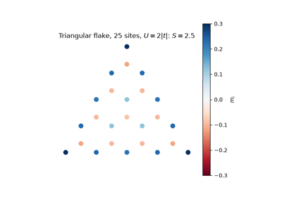
Lieb’s Theorem: The Total Spin of Graphene Triangles
1989-1992 – Shot Noise and the Fano Factor#
The discreteness of charge makes a current fluctuate; for independent electrons the noise is Schottky’s Poissonian \(S = 2eI\). In a phase-coherent conductor the Pauli principle correlates them: Lesovik (1989) and Buttiker (1990) expressed the zero-temperature noise through the transmission eigenvalues, \(S = 2e|V|\frac{e^2}{h}\sum_nT_n(1-T_n)\), so that open channels are noiseless and a ballistic conductor has a Fano factor \(F = S/2eI = 0\). Beenakker and Buttiker (1992) found the universal \(F = 1/3\) of diffusive wires, from the bimodal distribution of their transmission eigenvalues, later measured by Steinbach, Martinis and Devoret (1996) and Henny et al. (1999).
Implementation: tbkit.transport.Transport.transmission_eigenvalues(),
shot_noise(),
fano_factor(), and
tbkit.transport.RecursiveTransport.fano_factor().
References: G. B. Lesovik, “Excess quantum noise in 2D ballistic point contacts,” JETP Lett. 49, 592 (1989); M. Buttiker, “Scattering theory of thermal and excess noise in open conductors,” Phys. Rev. Lett. 65, 2901 (1990); C. W. J. Beenakker and M. Buttiker, “Suppression of shot noise in metallic diffusive conductors,” Phys. Rev. B 46, 1889 (1992); A. H. Steinbach, J. M. Martinis, and M. H. Devoret, Phys. Rev. Lett. 76, 3806 (1996); M. Henny, S. Oberholzer, C. Strunk, and C. Schonenberger, Phys. Rev. B 59, 2871 (1999).
Example: examples/transport/plot_shot_noise_fano_factor.py confirms
\(F = 0\) for a ballistic chain, \(F > 0.98\) for a tunnel
junction, and \(F = 1/3\) within 0.03 for disordered square-lattice
wires (20 samples, recursive Green’s function), whose transmission
eigenvalues pile up near 0 and 1.
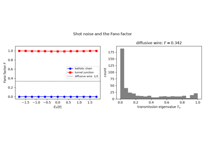
Shot Noise: the Fano Factor of Ballistic, Tunnel and Diffusive Conductors
1996/2018 – The Non-Hermitian Skin Effect#
N. Hatano and D. Nelson (1996) studied a chain whose hoppings to the right and to the left differ – a non-reciprocal, non-Hermitian lattice. It became the paradigm of the skin effect (Yao and Wang; Kunst, Edvardsson, Budich and Bergholtz, 2018): on a ring the spectrum winds around the energies inside it (a nonzero spectral winding number), while on an open chain it collapses onto a different, real set and every eigenstate piles up at one end. The open-chain bands are not Bloch waves on the unit circle \(|\beta| = |e^{ik}| = 1\) but on a generalized Brillouin zone.
Implementation: tbkit.kspace.KSpace.set_hopping() with
hermitian=False (non-reciprocal hoppings),
spectral_winding(),
finite_ham() (open or periodic chains),
get_ham_beta() and
gbz().
References: N. Hatano and D. R. Nelson, “Localization Transitions in Non-Hermitian Quantum Mechanics,” Phys. Rev. Lett. 77, 570-573 (1996); S. Yao and Z. Wang, “Edge States and Topological Invariants of Non-Hermitian Systems,” Phys. Rev. Lett. 121, 086803 (2018); F. K. Kunst, E. Edvardsson, J. C. Budich, and E. J. Bergholtz, Phys. Rev. Lett. 121, 026808 (2018).
Example: examples/non_hermitian/plot_skin_effect.py confirms, for
the Hatano-Nelson chain, the winding number 1, the real open-chain
spectrum inside \(\pm2\sqrt{t_Rt_L}\) with every eigenstate on the
left end, and the generalized Brillouin zone of radius
\(\sqrt{t_L/t_R}\).
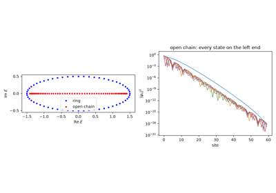
The Non-Hermitian Skin Effect and the Generalized Brillouin Zone
1997 – The Tenfold Way#
A. Altland and M. Zirnbauer completed Dyson’s classification of random matrices: time reversal \(T\), particle-hole \(C\) (each squaring to \(\pm1\), or absent) and their product, the chiral symmetry \(S\), sort every Hamiltonian into exactly ten symmetry classes. Schnyder, Ryu, Furusaki and Ludwig, and Kitaev, then showed (2008-2009) that the class and the dimension alone decide which topological invariant a gapped phase can carry – the periodic table of topological insulators and superconductors.
Implementation: tbkit.kspace.KSpace.symmetry_error() checks a
(unitary or antiunitary) symmetry of the Bloch Hamiltonian;
tenfold_class() names the class.
References: A. Altland and M. R. Zirnbauer, “Nonstandard Symmetry Classes in Mesoscopic Normal-Superconducting Hybrid Structures,” Phys. Rev. B 55, 1142-1161 (1997); A. P. Schnyder, S. Ryu, A. Furusaki, and A. W. W. Ludwig, Phys. Rev. B 78, 195125 (2008); A. Kitaev, AIP Conf. Proc. 1134, 22 (2009).
Example: examples/topology/plot_tenfold_way.py classifies the
models of this gallery: the SSH chain (BDI, or AIII with complex
hoppings), the Haldane model (A), spinless graphene (BDI), the
Kane-Mele model (AII), and the Kitaev chain (BDI, or D).
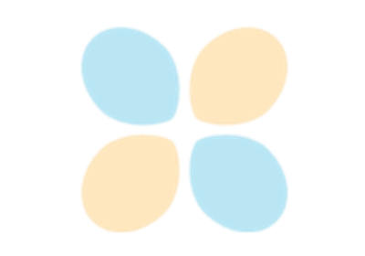
The Tenfold Way: Symmetry Classes of Tight-Binding Models
1997/2008 – Maximally Localized Wannier Functions#
The Wannier functions of a band are defined only up to a gauge: a k-dependent unitary mixing of the Bloch states. N. Marzari and D. Vanderbilt fixed it by minimizing their spread, which gives maximally localized Wannier functions; I. Souza, N. Marzari and D. Vanderbilt extended the construction to entangled bands (2001). In this basis a first-principles Hamiltonian becomes an exact, short-ranged tight-binding model, \(H_{mn}(\mathbf{R}) = \langle m\mathbf{0}|H|n\mathbf{R}\rangle\), whose Fourier interpolation gives bands, Berry curvatures and transport at any k. The Wannier90 code (2008) made these models a routine output of density-functional calculations, and brought tight-binding back to materials-specific accuracy.
Implementation: tbkit.io.read_wannier90() reads
seedname_hr.dat (with the degeneracy weights of the Wigner-Seitz
supercell), the lattice vectors of seedname.win and the Wannier
centres of seedname_centres.xyz into a
KSpace; read_hr(),
read_win_cell() and read_centres() read
the files themselves.
References: N. Marzari and D. Vanderbilt, “Maximally localized generalized Wannier functions for composite energy bands,” Phys. Rev. B 56, 12847-12865 (1997); I. Souza, N. Marzari, and D. Vanderbilt, Phys. Rev. B 65, 035109 (2001); A. A. Mostofi et al., “wannier90: A tool for obtaining maximally-localised Wannier functions,” Comput. Phys. Commun. 178, 685-699 (2008); N. Marzari et al., Rev. Mod. Phys. 84, 1419 (2012).
Example: examples/models/plot_maximally_localized_wannier_functions.py
imports graphene’s \(p_z\) bands from Wannier90-format files shipped
with it, checks the degeneracy weights and the decay of the hoppings, and
recovers the closed-form energies at \(\Gamma\) and at the Dirac point.
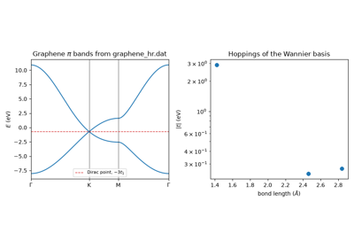
Maximally Localized Wannier Functions: Graphene from a Wannier90 File
2000/2011 – A Topological Flat Band on the Kagome Lattice#
K. Ohgushi, S. Murakami, and N. Nagaosa showed in 2000 that a canted (non-coplanar) magnetic texture on the kagome lattice, via the scalar spin chirality its itinerant electrons pick up hopping around each elementary triangle, acts on those electrons exactly like a complex nearest-neighbor hopping amplitude \(te^{i\phi}\) – breaking time-reversal symmetry with no net magnetic field, the kagome counterpart of Haldane’s honeycomb construction above. That complex phase gaps the flat band’s symmetry-protected touching point with the lattice’s middle band (above), leaving the (no longer exactly flat) lower band a genuine Chern insulator. Eleven years later, three independent 2011 papers (Tang, Mei, and Wen; Sun, Gu, Katsura, and Das Sarma; Neupert, Santos, Chamon, and Mudry) generalized the same idea into a broader research program: engineer lattice models whose lowest band is simultaneously nearly flat and topologically nontrivial, as a route to fractional-quantum-Hall-like physics – a fractional Chern insulator – entirely without Landau levels or a net magnetic field.
Implementation: tbkit.lattices.kagome() with every nearest-neighbor
hopping set to the same complex amplitude \(te^{i\phi}\) (rather
than the real, uniform \(t\) used above) via
tbkit.kspace.KSpace.set_hopping(); chern_number()
and berry_curvature() (1982 above) diagnose the
resulting band’s topology exactly as for the Haldane model.
References: K. Ohgushi, S. Murakami, and N. Nagaosa, “Spin Anisotropy and Quantum Hall Effect in the Kagome Lattice: Chiral Spin State Based on a Ferromagnet,” Phys. Rev. B 62, R6065-R6068 (2000); E. Tang, J.-W. Mei, and X.-G. Wen, “High-Temperature Fractional Quantum Hall States,” Phys. Rev. Lett. 106, 236802 (2011); K. Sun, Z. Gu, H. Katsura, and S. Das Sarma, “Nearly Flatbands with Nontrivial Topology,” Phys. Rev. Lett. 106, 236803 (2011); T. Neupert, L. Santos, C. Chamon, and C. Mudry, “Fractional Quantum Hall States at Zero Magnetic Field,” Phys. Rev. Lett. 106, 236804 (2011).
Example: examples/topology/plot_kagome_chern_band.py confirms the
flat band and middle band are exactly degenerate at \(\Gamma\) when
\(\phi=0\), confirms a real gap (larger than 0.3t) opens across the
whole Brillouin zone once \(\phi\ne0\), and confirms the resulting
three bands’ Chern numbers are exactly \(-1, 0, +1\) – summing to
zero, as they must.
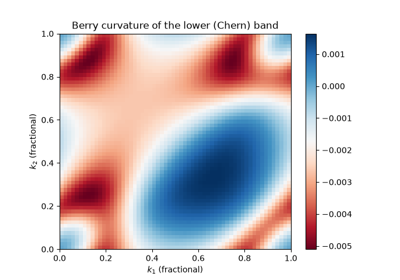
A Topological Flat Band on the Kagome Lattice
2001 – The Kitaev Chain and Majorana Zero Modes#
A. Kitaev wrote down the simplest topological superconductor: spinless fermions on a chain, with nearest-neighbour hopping and p-wave pairing. In the Bogoliubov-de Gennes description its spectrum is \(\pm\sqrt{(2t\cos k - \mu)^2 + 4|\Delta|^2\sin^2k}\); for \(|\mu| < 2|t|\) it is topological, and an open chain binds a Majorana zero mode at each end – half a fermion, pinned at zero energy by particle-hole symmetry. Proposals to realize it in semiconductor nanowires with strong spin-orbit coupling (Lutchyn, Sau and Das Sarma; Oreg, Refael and von Oppen, 2010) launched the search for topological qubits.
Implementation: tbkit.bdg – the real-space BdG Hamiltonian
(bdg_ham(), with bond or s-wave pairings), and the BdG
Bloch Hamiltonian (bdg_kspace()), whose Berry phase,
open chains and symmetry class follow from the usual KSpace tools.
References: A. Y. Kitaev, “Unpaired Majorana Fermions in Quantum Wires,” Physics-Uspekhi 44, 131-136 (2001); R. M. Lutchyn, J. D. Sau, and S. Das Sarma, Phys. Rev. Lett. 105, 077001 (2010); Y. Oreg, G. Refael, and F. von Oppen, Phys. Rev. Lett. 105, 177002 (2010).
Example: examples/superconductivity/plot_kitaev_chain.py confirms
the bulk spectrum, the Berry phase \(\pi\) for \(|\mu| < 2|t|\) and
0 outside, and two zero modes (\(|E| \sim 10^{-12}\)) at the ends of
an open 40-site chain in the topological phase only.
2003/2004 – The Intrinsic Spin Hall Effect#
An electric field can drive a spin current transverse to it, with no charge current at all. S. Murakami, N. Nagaosa and S.-C. Zhang (2003), for holes in p-doped semiconductors, and J. Sinova and coworkers (2004), for a two-dimensional electron gas with Rashba coupling, showed that spin-orbit coupling alone produces it, as a property of the band structure – the spin counterpart of the intrinsic anomalous Hall effect (above). The spin current \(j^s_x = \{s_z, v_x\}/2\) replaces the charge current in the Kubo formula, and the spin Hall conductivity comes in the natural unit \(e/2\pi\). When \(s_z\) is conserved, the two spins decouple and it is quantized in a gap, \(\sigma^s_{xy} = \frac{e}{2\pi}(C_\uparrow - C_\downarrow)/2\) – the quantum spin Hall effect of the Kane-Mele model (2005, below). The effect was observed in 2004-2005 by Kerr microscopy of spins accumulated at the edges of semiconductor samples.
Implementation: tbkit.kspace.KSpace.spin_hall_conductivity(), for
spinful models (spin=True), at any Fermi level, with the spin current
along any axis.
References: S. Murakami, N. Nagaosa, and S.-C. Zhang, “Dissipationless Quantum Spin Current at Room Temperature,” Science 301, 1348-1351 (2003); J. Sinova, D. Culcer, Q. Niu, N. A. Sinitsyn, T. Jungwirth, and A. H. MacDonald, “Universal Intrinsic Spin Hall Effect,” Phys. Rev. Lett. 92, 126603 (2004); Y. K. Kato, R. C. Myers, A. C. Gossard, and D. D. Awschalom, “Observation of the Spin Hall Effect in Semiconductors,” Science 306, 1910-1913 (2004); J. Wunderlich, B. Kaestner, J. Sinova, and T. Jungwirth, “Experimental Observation of the Spin-Hall Effect in a Two-Dimensional Spin-Orbit Coupled Semiconductor System,” Phys. Rev. Lett. 94, 047204 (2005).
Example: examples/hall_effects/plot_intrinsic_spin_hall_effect.py
confirms the plateau \(e/2\pi = \frac{e}{2\pi}(C_\uparrow -
C_\downarrow)/2\) of the Kane-Mele model, cross-checked against the Chern
numbers and Hall conductivities of its two decoupled spin sectors, and
its departure from quantization under Rashba coupling, while the
\(\mathbb{Z}_2\) invariant stays 1.
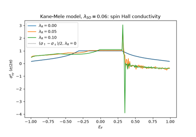
The Intrinsic Spin Hall Effect: Kane-Mele Plateau and Rashba Coupling
2004 – Isolation of Graphene#
A. Geim, K. Novoselov, and coworkers mechanically exfoliated a single atomic layer of carbon from graphite, producing the first genuinely 2D crystal. Graphene’s low-energy quasiparticles obey a massless relativistic (Dirac) equation rather than the usual Schrodinger equation: expanding the honeycomb-lattice \(H(\mathbf{k})\) near either inequivalent Brillouin-zone corner \(K\), \(K'\) gives a linear dispersion, \(E(\mathbf{k}) = \pm\hbar v_F|\mathbf{k}|\), with the two bands touching at exactly zero energy – turning a tabletop condensed matter experiment into a laboratory for relativistic quantum phenomena, and putting the honeycomb lattice, and Haldane’s sixteen-year old model built on it, at the center of the field. Geim and Novoselov shared the 2010 Nobel Prize in Physics for this work.
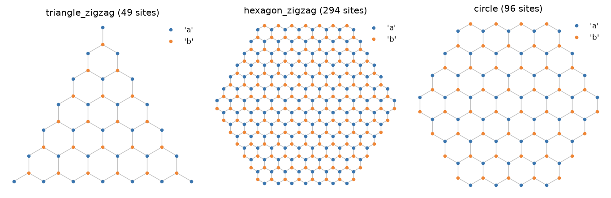
Implementation: tbkit.lattices.honeycomb(), or the equivalent
hand-built unit cell used throughout this package’s graphene examples;
tbkit.graphene.GrapheneLattice additionally provides ready-made
finite flakes of several shapes and terminations (triangular/hexagonal,
zigzag/armchair).
Example: examples/tight_binding/plot_isolation_of_graphene.py
confirms the Berry phase \(\pi\) around both Dirac points, with
opposite pseudospin windings, the \(||A|-|B||\) zero modes of
zigzag triangles, and the different scaling of the lowest levels of
zigzag and armchair hexagons.
References: K. S. Novoselov, A. K. Geim, S. V. Morozov, D. Jiang, Y. Zhang, S. V. Dubonos, I. V. Grigorieva, and A. A. Firsov, “Electric Field Effect in Atomically Thin Carbon Films,” Science 306, 666-669 (2004).
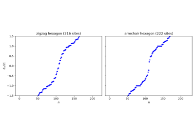
The Isolation of Graphene: Flakes, Edges, and a Berry Phase of pi
2005-2007 – The Kane-Mele Model and the Quantum Spin Hall Effect#
C. Kane and E. Mele showed in 2005 that adding intrinsic spin-orbit coupling to graphene – two time-reversed copies of Haldane’s model, one per spin, with opposite Chern number so the total Chern number vanishes – produces a new, time-reversal-symmetric topological phase protected by a \(\mathbb{Z}_2\) (rather than integer) invariant: the quantum spin Hall effect. A finite ribbon of this model hosts a Kramers pair of helical, counter-propagating, spin-momentum-locked edge states that cannot be gapped out by any time-reversal-symmetric perturbation – immune to backscattering because a spin-up right-mover has no same-momentum, same-spin partner to scatter into. Konig et al. observed exactly this two-terminal quantized conductance in HgTe/CdTe quantum wells in 2007, the first experimentally realized topological insulator of any kind.
Edge states need an edge, so the model is cut into a ribbon: periodic along one primitive vector, finite along the other. The shaded column is the repeating unit; the ribbon is that column tiled sideways, and its two open edges are where the helical states live.
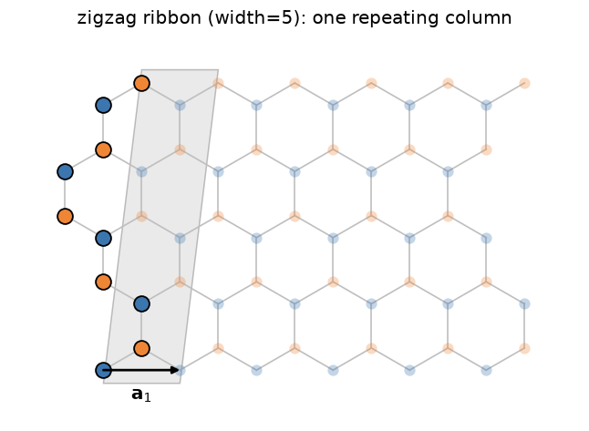
Implementation: tbkit.kspace.KSpace constructed with
spin=True gives every site a spin-1/2 degree of freedom, with
set_hopping()/set_onsite()
accepting 2x2 (Pauli) matrices – built from tbkit.kspace.PAULI –
for spin-dependent terms such as Kane-Mele’s \(i\lambda_{SO}\sigma_z\)
next-nearest-neighbor coupling or Rashba spin-orbit coupling;
tbkit.kspace.ribbon() cuts the open, finite-width ribbon that exposes
the helical edge states directly in the spectrum.
z2_invariant() computes the \(\mathbb{Z}_2\)
invariant from the flow of the hybrid Wannier centres (with or without
Rashba coupling), and tbkit.orbital.OrbitalSystem builds the
spinful model on a finite flake
(set_spin_orbit(),
set_rashba()).
References: C. L. Kane and E. J. Mele, “Z2 Topological Order and the Quantum Spin Hall Effect,” Phys. Rev. Lett. 95, 146802 (2005); C. L. Kane and E. J. Mele, “Quantum Spin Hall Effect in Graphene,” Phys. Rev. Lett. 95, 226801 (2005); M. Konig et al., “Quantum Spin Hall Insulator State in HgTe Quantum Wells,” Science 318, 766-770 (2007).
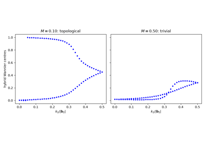
The Kane-Mele Z2 Invariant from Wannier-Centre Flow
2006 – The Kernel Polynomial Method#
Weisse, Wellein, Alvermann and Fehske turned the Chebyshev expansions of Silver and Roder (1994) into the standard way of computing spectral properties of very large sparse Hamiltonians without diagonalizing them: expand \(\delta(E - H)\) in Chebyshev polynomials of the rescaled Hamiltonian, compute each moment with one sparse matrix-vector product, estimate traces with a few random vectors, and damp the truncation’s Gibbs oscillations with a kernel. The cost grows linearly with the number of sites – millions of them, for densities of states, local densities of states, and Kubo conductivities.
Implementation: tbkit.kpm (dos(),
ldos(), conductivity(), with the Jackson
and Lorentz kernels).
References: A. Weisse, G. Wellein, A. Alvermann, and H. Fehske, “The Kernel Polynomial Method,” Rev. Mod. Phys. 78, 275-306 (2006); R. N. Silver and H. Roder, Int. J. Mod. Phys. C 5, 735 (1994).
Example: examples/large_scale/plot_kernel_polynomial_method.py
computes the density of states of a 45,000-site graphene sheet, confirms
it against the Brillouin-zone result to within 3% and against the Dirac
law near \(E = 0\), finds the van Hove peak at \(|t|\), and the
zero-energy states bound by 2% of vacancies.
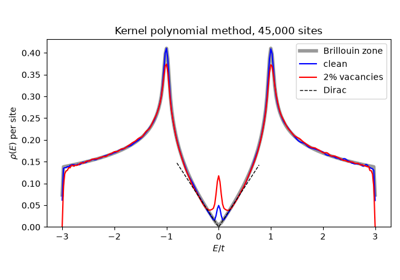
The Kernel Polynomial Method: Graphene With Vacancies, 45,000 Sites
2007 – The Fu-Kane Parity Criterion#
L. Fu and C. Kane showed that with inversion symmetry the \(\mathbb{Z}_2\) invariant needs no Wilson loop: it is the product of the parities of the occupied Kramers pairs at the time-reversal-invariant momenta, \((-1)^\nu = \prod_i\delta_i\). A band inversion at one of them makes the insulator topological – the criterion that predicted Bi1-xSbx and Bi2Se3. The same year, Konig et al. confirmed the Bernevig-Hughes-Zhang prediction of the quantum spin Hall effect in HgTe quantum wells.
Implementation: tbkit.kspace.KSpace.parity_z2().
References: L. Fu and C. L. Kane, “Topological Insulators with Inversion Symmetry,” Phys. Rev. B 76, 045302 (2007); B. A. Bernevig, T. L. Hughes, and S.-C. Zhang, Science 314, 1757 (2006).
Example: examples/topology/plot_fu_kane_parity.py confirms, across
the phase diagram of the BHZ model, that the parity criterion and the
Wannier-centre flow give the same \(\nu\).
The Fu-Kane Parity Criterion: Z2 from Inversion Eigenvalues
2007/2009 – Three-Dimensional Topological Insulators#
L. Fu, C. Kane and E. Mele, J. Moore and L. Balents, and R. Roy showed that the \(\mathbb{Z}_2\) topology of the quantum spin Hall effect survives in three dimensions: a time-reversal-invariant insulator has four \(\mathbb{Z}_2\) indices, and an odd strong index \(\nu_0\) forces an odd number of Dirac cones onto every surface – metallic, spin-momentum-locked surface states that no time-reversal invariant perturbation can gap. Hsieh et al. observed them by photoemission in Bi1-xSbx (2008); Xia et al. and Zhang et al. then found a single cone in Bi2Se3 (2009). The tight-binding counterpart of a photoemission map is the spectral function of the surface of a semi-infinite crystal, computed with the iterative surface Green’s function of Lopez Sancho, Lopez Sancho and Rubio (1985) – no finite slab, so the surface states are never mixed with those of an opposite surface.
Implementation: tbkit.kspace.KSpace.surface_spectral_function()
(surface or bulk, either side, any primitive vector as surface normal);
parity_z2() gives the strong index of 3D
models.
References: L. Fu, C. L. Kane, and E. J. Mele, “Topological Insulators in Three Dimensions,” Phys. Rev. Lett. 98, 106803 (2007); J. E. Moore and L. Balents, Phys. Rev. B 75, 121306(R) (2007); R. Roy, Phys. Rev. B 79, 195322 (2009); D. Hsieh et al., Nature 452, 970 (2008); Y. Xia et al., Nat. Phys. 5, 398 (2009); H. Zhang et al., Nat. Phys. 5, 438 (2009); M. P. Lopez Sancho, J. M. Lopez Sancho, and J. Rubio, J. Phys. F 15, 851 (1985).
Example: examples/topology/plot_3d_topological_insulator.py
confirms the strong index of a cubic model across its phases, an empty
bulk gap, a single surface Dirac cone of velocity 1 at
\(\bar\Gamma\) (at \(\bar{M}\) when the band inversion moves to
\(R\)), and no surface state in the trivial phase.
Three-Dimensional Topological Insulators: the Surface Dirac Cone
2008 – The Universal Optical Absorption of Graphene#
Nair et al. (2008) measured the transmission of white light through suspended graphene membranes: each layer absorbs \(\pi\alpha \approx 2.3\%\), with \(\alpha\) the fine-structure constant, independent of wavelength over the visible range. The number is set by the Kubo-Greenwood optical conductivity of massless Dirac electrons,
(spin and both valleys counted) for \(2|E_F| < \hbar\omega \ll t\), the value predicted by Ando, Zheng and Suzuki (2002) and by Gusynin, Sharapov and Carbotte (2006): the joint density of states of the Dirac cones grows as \(\omega\) and the weight of each transition falls as \(1/\omega\). A free-standing sheet absorbs \(\mathrm{Re}\,\sigma/\varepsilon_0c = \pi\alpha\). Doping blocks the transitions below \(2|E_F|\) (Pauli blocking), and the lattice brings a van Hove peak at \(\hbar\omega = 2|t|\).
Implementation: the new module tbkit.optics:
optical_conductivity() (the Kubo-Greenwood tensor
\(\sigma_{ab}(\omega)\) of a 2D KSpace, with
a broadening \(\eta\), interband and Drude parts, at any Fermi level
and temperature; its static Hall part equals
hall_conductivity()) and
joint_dos().
References: R. R. Nair, P. Blake, A. N. Grigorenko, K. S. Novoselov, T. J. Booth, T. Stauber, N. M. R. Peres, and A. K. Geim, “Fine Structure Constant Defines Visual Transparency of Graphene,” Science 320, 1308 (2008); T. Ando, Y. Zheng, and H. Suzuki, “Dynamical Conductivity and Zero-Mode Anomaly in Honeycomb Lattices,” J. Phys. Soc. Jpn. 71, 1318 (2002); V. P. Gusynin, S. G. Sharapov, and J. P. Carbotte, “Unusual Microwave Response of Dirac Quasiparticles in Graphene,” Phys. Rev. Lett. 96, 256802 (2006).
Example: examples/optics/plot_graphene_universal_absorption.py
confirms that the tight-binding optical conductivity of graphene tends to
\(e^2/4\hbar\) (within 0.5%) as \(\hbar\omega\to0\), so that one
layer absorbs \(\pi\alpha = 2.29\%\); that the joint density of
states grows as \(A_c\hbar\omega/4\pi\hbar^2v_F^2\); that the
absorption peaks at the van Hove energy \(2|t|\); and that doping to
\(E_F\) suppresses it below \(2|E_F|\).
The Universal Absorption of Graphene: Opacity Defined by the Fine-Structure Constant
2009/2011 – Floquet Topological Insulators#
T. Oka and H. Aoki predicted that circularly polarized light turns graphene into a Hall insulator; Kitagawa, Oka, Brataas, Fu and Demler, and Lindner, Refael and Galitski, showed that periodic driving can engineer topological bands. Stroboscopically a drive of period \(T\) acts as a static Floquet Hamiltonian, \(e^{-iH_FT} = \mathcal{T}e^{-i\int_0^TH(t)dt}\); for light on graphene, at high frequency, \(H_F\) gains Haldane’s complex second-neighbour hopping. McIver et al. measured the light-induced anomalous Hall effect in graphene in 2020.
Implementation: tbkit.floquet – quasienergies and the Floquet
Hamiltonian from the time-ordered evolution, the Sambe (extended) space
of the harmonics, and FloquetKSpace, a driven
Bloch model (light enters through
tbkit.kspace.KSpace.get_ham_peierls()).
References: T. Oka and H. Aoki, “Photovoltaic Hall Effect in Graphene,” Phys. Rev. B 79, 081406 (2009); T. Kitagawa, T. Oka, A. Brataas, L. Fu, and E. Demler, Phys. Rev. B 84, 235108 (2011); N. H. Lindner, G. Refael, and V. Galitski, Nature Physics 7, 490 (2011); J. W. McIver et al., Nature Physics 16, 38 (2020).
Example: examples/floquet/plot_floquet_chern_insulator.py confirms
that the two routes to the quasienergies agree, that circularly polarized
light opens equal gaps at \(K\) and \(K'\) with Chern number
\(\pm1\) (reversed with the helicity), and that the gap grows as
\(A_0^2\) and falls as \(1/\omega\).
Floquet Engineering: A Chern Insulator From Circularly Polarized Light
2010-2013 – Anomalous Floquet Topological Phases#
Kitagawa, Berg, Rudner and Demler noticed that a driven lattice can have chiral edge states although every Floquet band has zero Chern number: quasienergies are defined modulo \(\omega = 2\pi/T\), so edge states can wind around the whole Floquet zone, and the bulk-edge correspondence of static insulators fails. Rudner, Lindner, Berg and Levin gave the minimal model – a bipartite square lattice whose hopping is switched on along one bond direction at a time, so that at “perfect transfer” the evolution over a period is the identity in the bulk while particles run along the edges – and the invariant that counts the edge states in a gap \(\epsilon\): the winding number \(W[U_\epsilon]\) of the evolution at all times of the period, closed by a return map built from \(H_F\) with its branch cut in that gap. Across a group of bands it changes by their total Chern number. The anomalous phases were observed in photonic waveguide lattices in 2017.
Implementation: tbkit.floquet.step_drive() (exact
piecewise-constant drives of KSpace models, ribbons, or real-space
System flakes), DrivenKSpace (any
\(H(\mathbf{k}, t)\)), the epsilon branch cut of
effective_hamiltonian() and
FloquetKSpace,
winding_number(), and
edge_state_count() for ribbons.
References: T. Kitagawa, E. Berg, M. Rudner, and E. Demler, “Topological characterization of periodically driven quantum systems,” Phys. Rev. B 82, 235114 (2010); M. S. Rudner, N. H. Lindner, E. Berg, and M. Levin, “Anomalous Edge States and the Bulk-Edge Correspondence for Periodically Driven Two-Dimensional Systems,” Phys. Rev. X 3, 031005 (2013); L. J. Maczewsky, J. M. Zeuner, S. Nolte, and A. Szameit, Nat. Commun. 8, 13756 (2017); S. Mukherjee et al., Nat. Commun. 8, 13918 (2017).
Example: examples/floquet/plot_anomalous_floquet_phases.py builds
the five-step model: at perfect transfer both Floquet bands sit at
quasienergy 0 with \(C = 0\), yet \(W = 1\) in the gap at
\(\pi/T\) and a ribbon has one chiral mode per edge; on a real-space
flake a particle in the bulk returns to its site every period while one
on the edge moves along it. Away from perfect transfer it maps the
trivial, Chern and anomalous phases, where the Chern numbers of
\(H_F\) miss the edge states.
Anomalous Floquet Topological Phases: Edge States With Zero Chern Numbers
2010 – Strain as a Gauge Field: Pseudo-Magnetic Fields#
F. Guinea, M. Katsnelson, and A. Geim pointed out that graphene offers a way to build a magnetic field out of nothing but mechanical deformation. Straining the sheet changes its bond lengths and therefore its hopping amplitudes, and near the Dirac point a smooth modulation of the three nearest-neighbor hoppings enters the Dirac equation in precisely the slot a vector potential occupies: it displaces the Dirac cone in momentum space rather than shifting its energy. A triaxial strain whose modulation grows linearly with distance from the center therefore acts on the electrons as a uniform pseudo-magnetic field,
(\(\beta\) the strain strength in the convention below, \(\hbar=e=a=1\)), quantizing the spectrum into exactly the relativistic ladder \(E_n = \mathrm{sign}(n)v_F\sqrt{2B_s|n|}\) that a real field produces.
What makes this more than an analogy is what is missing. Every hopping stays real, so the Hamiltonian is real, time-reversal symmetry is never broken – and a time-reversal-symmetric Hamiltonian cannot host a genuine magnetic field. The resolution is that the pseudo-field must point the opposite way at the second valley \(\mathbf{K}'\): carriers in the two valleys bend in opposite directions, so the sample carries no net Hall current even while each valley is fully Landau-quantized. Nor is the effect bounded by what a laboratory magnet can deliver, since nothing is being magnetized: Levy and coworkers measured pseudo-Landau levels in strained graphene nanobubbles corresponding to fields above 300 T, an order of magnitude beyond the strongest static fields available anywhere.
Implementation:
tbkit.graphene.GrapheneSystem.set_hop_linear_strain() sets every
nearest-neighbor bond to \(t_{ij} = t(1 + \tfrac14\beta\,
\hat{\boldsymbol\delta}_{ij}\cdot\mathbf{r}_{ij})\), with
\(\hat{\boldsymbol\delta}_{ij}\) the bond direction and
\(\mathbf{r}_{ij}\) its midpoint – linear triaxial strain, measured
from the coordinate origin, so the flake must be centered on it.
get_beta_lims() returns the range of
strains that still leaves every hopping positive, and
get_butterfly() sweeps
\(\beta\) across that whole range – the strain analogue of
Hofstadter’s flux sweep (1976, above).
References: F. Guinea, M. I. Katsnelson, and A. K. Geim, “Energy gaps and a zero-field quantum Hall effect in graphene by strain engineering,” Nature Physics 6, 30-33 (2010); N. Levy, S. A. Burke, K. L. Meaker, M. Panlasigui, A. Zettl, F. Guinea, A. H. Castro Neto, and M. F. Crommie, “Strain-Induced Pseudo-Magnetic Fields Greater Than 300 Tesla in Graphene Nanobubbles,” Science 329, 544-547 (2010); the strain gauge field itself goes back to H. Suzuura and T. Ando, “Phonons and electron-phonon scattering in carbon nanotubes,” Phys. Rev. B 65, 235412 (2002).
Example: examples/strain/plot_pseudo_magnetic_field.py strains a
1728-site circular graphene flake at \(\beta=-0.05\), confirms the
Hamiltonian is exactly real (unlike the complex, Peierls-substituted one
it is compared against), and confirms that its bulk states nevertheless
bunch onto the first four pseudo-Landau levels
\(E_n = \tfrac32 t\sqrt{|\beta| n}\) to within 3%, with the
\(\sqrt{n}\) spacing of a Dirac cone rather than the even spacing of
a parabolic band. It then confirms that \(E_1\) tracks
\(\sqrt{|\beta|}\) across a range of strains, and that a real field
of the same strength, \(\alpha = B_s/2\pi\), reproduces the same
\(E_1\) to within 3% through a complex Hamiltonian.
Strain as a Gauge Field: Pseudo-Landau Levels in Graphene
2010 – Band Unfolding: Effective Band Structures of Supercells#
Alloys, dopants, vacancies and disorder break the translation symmetry, and a calculation in a supercell folds the bands into a Brillouin zone \(N\) times smaller, burying the band structure that photoemission actually measures. W. Ku, T. Berlijn and C.-C. Lee, and independently V. Popescu and A. Zunger, unfolded it: the weight of each supercell state \(|\mathbf{K}J\rangle\) on the primitive Bloch states at every \(\mathbf{k}\) folding onto \(\mathbf{K}\) gives an effective spectral function \(A(\mathbf{k},\omega) = \sum_J W_J(\mathbf{k}) \delta(\omega - E_J)\) in the primitive zone: sharp bands where the crystal is ordered, broadened ones where disorder scatters the electrons.
Implementation: tbkit.moire.supercell() (any integer supercell
matrix, spinful models and overlaps included),
tbkit.moire.unfold() and tbkit.moire.spectral_function().
References: W. Ku, T. Berlijn, and C.-C. Lee, “Unfolding First-Principles Band Structures,” Phys. Rev. Lett. 104, 216401 (2010); V. Popescu and A. Zunger, “Extracting E versus k effective band structure from supercell calculations on alloys and impurities,” Phys. Rev. B 85, 085201 (2012).
Example: examples/moire/plot_band_unfolding.py confirms that a
pristine \(3\times3\) graphene supercell unfolds exactly onto the two
graphene bands, the coherence factors \((1\pm\epsilon_k/E_k)/2\) of a
staggered chain, the sum rule \(\int A\,d\omega = 2\), and a peak
width that grows with the Anderson disorder of a \(6\times6\)
supercell.
Band Unfolding: the Effective Band Structure of a Disordered Supercell
2011 – The Local Chern Marker#
R. Bianco and R. Resta showed that the Chern number, an integral over the Brillouin zone, is also a local property of the ground state: the marker \(C(\mathbf{r}) = -\frac{4\pi}{a}\mathrm{Im}\langle\mathbf{r}|PxQyP|\mathbf{r}\rangle\), built from the projector on the occupied states of a finite sample, equals the Chern number in its bulk and compensates at its edges. It applies where no Brillouin zone exists – disordered, amorphous or quasicrystalline samples – and follows the topological Anderson transitions of disordered Chern insulators.
Implementation: tbkit.system.System.get_local_chern_marker().
References: R. Bianco and R. Resta, “Mapping Topological Order in Coordinate Space,” Phys. Rev. B 84, 241106 (2011).
Example: examples/topology/plot_local_chern_marker.py confirms, on
a Haldane flake, a bulk marker equal to the Chern number with a total of
zero, robust to weak disorder and destroyed by strong disorder.
The Local Chern Marker: Topology Without a Brillouin Zone
2011/2015 – Weyl Semimetals#
Wan, Turner, Vishwanath and Savrasov predicted that band touchings of a new kind – Weyl points, where two bands meet linearly in every direction, each a monopole of Berry curvature – exist in real 3D crystals. In 2015 Xu et al. and Lv et al. observed them in TaAs, through their surface signature: open Fermi arcs. Every plane of constant \(k_z\) is a 2D insulator whose Chern number jumps across a Weyl point; each plane with \(C \neq 0\) contributes a chiral surface state, and together they draw the arc between the projected Weyl points.
Implementation: 3D KSpace models (prim_vec as three 3-tuples);
chern_number() of a plane of the zone
(plane, k_fixed); tbkit.kspace.ribbon() cuts a slab.
References: X. Wan, A. M. Turner, A. Vishwanath, and S. Y. Savrasov, “Topological Semimetal and Fermi-Arc Surface States in the Electronic Structure of Pyrochlore Iridates,” Phys. Rev. B 83, 205101 (2011); S.-Y. Xu et al., Science 349, 613 (2015); B. Q. Lv et al., Phys. Rev. X 5, 031013 (2015).
Example: examples/three_dimensions/plot_weyl_semimetal.py confirms
two linear Weyl points, \(|C(k_z)| = 1\) between them and 0 outside,
and zero-energy surface states of a slab only between the projected
Weyl points.
Weyl Semimetals: Monopoles of Berry Curvature and Fermi Arcs
1998/2015 – PT Symmetry, Exceptional Points, and Gain-Loss Lattices#
C. Bender and S. Boettcher overturned a piece of textbook folklore: Hermiticity is sufficient for a real spectrum, but it is not necessary. A Hamiltonian merely symmetric under the combined parity-time operation \(\mathcal{PT}\) can have an entirely real spectrum too. On a lattice this means balanced gain and loss – imaginary onsite energies \(\pm i\gamma\) placed symmetrically on the two sublattices – leaves every eigenvalue real up to a finite threshold in \(\gamma\).
At that threshold the eigenvalues do not cross; they collide and move off into the complex plane as conjugate pairs. The collision point is an exceptional point, and it is unlike any Hermitian degeneracy: the two eigenvectors coalesce as well, so the Hamiltonian loses a dimension of its eigenbasis and stops being diagonalizable altogether. How close a mode has come to that degeneracy is measured by the Petermann factor \(K_n\), introduced decades earlier in laser physics to explain anomalously broad linewidths,
which equals 1 for an orthogonal (Hermitian) eigenbasis and diverges at an exceptional point. None of this is a formal game: gain and loss are the most accessible knobs an optics experimentalist has, and \(\mathcal{PT}\) symmetry breaking was seen directly in coupled optical waveguides in 2010.
Combined with topology it produces an effect with no Hermitian counterpart at all. Chiral symmetry forces each of the SSH model’s zero modes (1979, above) to live entirely on one sublattice, so sublattice gain and loss is felt by them but not by the bulk states, which are spread evenly over both. The topological modes are therefore the first to leave the real axis, picking up energies \(\pm i\gamma\) at any gain at all, while the entire bulk stays real until \(\gamma\) reaches the bulk gap – a way to amplify a topological mode selectively, demonstrated in a chain of dielectric microwave resonators.
Implementation: tbkit.system.System.set_onsite() accepts complex
onsite energies, and get_eig() detects a
non-Hermitian Hamiltonian and switches to the general (non-symmetric)
eigensolver, with left=True returning the left eigenvectors too;
get_petermann() builds \(K_n\) from both
sets, and tbkit.plot.Plot.spectrum_complex() plots the real and
imaginary parts of the spectrum together.
References: C. M. Bender and S. Boettcher, “Real Spectra in Non-Hermitian Hamiltonians Having PT Symmetry,” Phys. Rev. Lett. 80, 5243-5246 (1998); K. Petermann, “Calculated spontaneous emission factor for double-heterostructure injection lasers with gain-induced waveguiding,” IEEE J. Quantum Electron. 15, 566-570 (1979); C. E. Ruter, K. G. Makris, R. El-Ganainy, D. N. Christodoulides, M. Segev, and D. Kip, “Observation of parity-time symmetry in optics,” Nature Physics 6, 192-195 (2010); H. Schomerus, “Topologically protected midgap states in complex photonic lattices,” Opt. Lett. 38, 1912-1914 (2013); C. Poli, M. Bellec, U. Kuhl, F. Mortessagne, and H. Schomerus, “Selective enhancement of topologically induced interface states in a dielectric resonator chain,” Nat. Commun. 6, 6710 (2015).
Example: examples/non_hermitian/plot_pt_symmetry.py confirms, for a
gain-loss dimer, that the spectrum is real and equal to
\(\pm\sqrt{t^2-\gamma^2}\) below the exceptional point at
\(\gamma=t\), purely imaginary above it, and that the Petermann
factor matches \(1/(1-\gamma^2/t^2)\) to machine precision before
diverging at the exceptional point itself. It then applies the same
gain-loss pattern to a 40-site topological SSH chain and confirms that
exactly two states – the edge modes – acquire imaginary parts, at
exactly \(\pm i\gamma\), that the amplified one lies entirely on the
gain sublattice and the damped one entirely on the loss sublattice, and
that the bulk stays real until \(\gamma\) exceeds \(|v-w|\).
PT Symmetry, Exceptional Points, and a Selectively Amplified Edge Mode
2011/2018 – Magic-Angle Twisted Bilayer Graphene#
R. Bistritzer and A. H. MacDonald showed that two graphene layers twisted by a small angle \(\theta\) form a moiré superlattice whose interlayer tunnelling \(w\) renormalizes the Dirac velocity, \(v^*/v = (1-3\alpha^2)/(1+6\alpha^2)\) with \(\alpha = w/\hbar vk_\theta\), and flattens the two bands at charge neutrality at a series of magic angles, the first near \(1.1°\). In 2018 Y. Cao, P. Jarillo-Herrero and co-workers found, in exactly those bands, correlated insulating states and superconductivity – the start of “twistronics” and of moiré materials as tunable platforms for strong correlations.
Implementation: tbkit.moire.twisted_bilayer() (commensurate moiré
cells of honeycomb or square layers, every hopping a function of the bond
vector, tbkit.moire.pz_hopping() by default),
tbkit.moire.commensurate_angle(), and
tbkit.moire.magic_angle_parameter() (\(w\), \(\alpha\),
\(v^*/v\) of the same model).
References: R. Bistritzer and A. H. MacDonald, “Moire bands in twisted double-layer graphene,” PNAS 108, 12233-12237 (2011); J. M. B. Lopes dos Santos, N. M. R. Peres, and A. H. Castro Neto, Phys. Rev. B 86, 155449 (2012); P. Moon and M. Koshino, Phys. Rev. B 85, 195458 (2012); Y. Cao et al., Nature 556, 43-50 and 80-84 (2018).
Example: examples/moire/plot_magic_angle_twisted_bilayer.py
confirms \(w \approx 110\) meV and a first magic angle near
\(1.1°\) for the Moon-Koshino hoppings, a tight-binding Dirac velocity
within 3% of Bistritzer-MacDonald at 9.4°, 6.0° and 4.4°, and – at the
magic value of \(\alpha\), reached at 6.0° by scaling the interlayer
hoppings, since the 1.05° cell (11908 orbitals) is too large for dense
Bloch matrices – central bands more than 15 times narrower.
Magic-Angle Twisted Bilayer Graphene: Flat Moiré Bands
2015-2018 – Exceptional Points in Momentum Space: Vorticity, Exceptional Rings and Bulk Fermi Arcs#
The exceptional point of a gain-loss dimer (1998/2015, above) needs a parameter to be tuned. In a 2D crystal the Bloch momentum supplies two parameters for free, and exceptional points become generic features of non-Hermitian band structures. Zhen et al. (2015) saw it first in a photonic crystal slab: radiation losses turned a Dirac cone into a ring of exceptional points, inside which the real parts of the two bands coincide. Kozii and Fu (2017) and Zhou et al. (2018) showed that a generic non-Hermitian term instead splits a Dirac point into a pair of exceptional points joined by a bulk Fermi arc, an open line of equal real energies and different lifetimes, observed in a photonic crystal. Shen, Zhen and Fu (2018) put these objects on a topological footing: the eigenvalue vorticity \(\nu = -\frac{1}{2\pi}\oint\nabla_{\mathbf{k}}\arg(E_m - E_n)\cdot d\mathbf{k}\) is \(\pm1/2\) around an exceptional point (the two bands swap after one loop) and 0 around a Dirac point, so a Dirac point can only split into EPs of opposite vorticity; they also defined Chern numbers of non-Hermitian bands from left and right eigenvectors, all equal as long as a line gap separates the bands. The discriminant \(\Delta = \prod_{m<n}(E_m - E_n)^2\) (Yang, Schnyder, Hu and Chiu, 2021) gives the same charges without following any band, and its periodicity forces the charges to add up to zero over the Brillouin zone: exceptional points come in pairs. Encircling an exceptional point swaps the two eigenstates, and restores the state only after four loops, as Heiss predicted and Dembowski et al. measured in a microwave cavity.
Implementation: the new module tbkit.exceptional:
track_eigenvalues() (continuation around a
loop, never sorting), vorticity(),
discriminant() (from the resultant of the
characteristic polynomial) and
discriminant_winding(),
find_exceptional_points() (charges, orders from
the Petermann factor, exceptional rings, and the doubling theorem),
fermi_arcs(), and
encircle();
tbkit.kspace.KSpace.biorthogonal_chern_number() and
biorthogonal_berry_curvature() (the LR, RL, RR
and LL Chern numbers of line-gapped bands).
References: B. Zhen, C. W. Hsu, Y. Igarashi, L. Lu, I. Kaminer, A. Pick, S.-L. Chua, J. D. Joannopoulos, and M. Soljacic, “Spawning rings of exceptional points out of Dirac cones,” Nature 525, 354-358 (2015); V. Kozii and L. Fu, “Non-Hermitian topological theory of finite-lifetime quasiparticles: prediction of bulk Fermi arc due to exceptional point,” arXiv:1708.05841 (2017); H. Shen, B. Zhen, and L. Fu, “Topological band theory for non-Hermitian Hamiltonians,” Phys. Rev. Lett. 120, 146402 (2018); H. Zhou, C. Peng, Y. Yoon, C. W. Hsu, K. A. Nelson, L. Fu, J. D. Joannopoulos, M. Soljacic, and B. Zhen, “Observation of bulk Fermi arc and polarization half charge from paired exceptional points,” Science 359, 1009-1012 (2018); Z. Yang, A. P. Schnyder, J. Hu, and C.-K. Chiu, “Fermion doubling theorems in two-dimensional non-Hermitian systems for Fermi points and exceptional points,” Phys. Rev. Lett. 126, 086401 (2021); W. D. Heiss, “Repulsion of resonance states and exceptional points,” Phys. Rev. E 61, 929 (2000); C. Dembowski, H.-D. Graf, H. L. Harney, A. Heine, W. D. Heiss, H. Rehfeld, and A. Richter, “Experimental observation of the topological structure of exceptional points,” Phys. Rev. Lett. 86, 787 (2001).
Examples:
examples/non_hermitian/plot_exceptional_points_fermi_arcs.py finds
the four EPs of graphene with a non-Hermitian \(i\gamma\sigma_x\)
coupling, of charges \(\pm1\) adding up to zero, all second order,
exactly where \(\mathrm{Re}f = 0\) and \(|\mathrm{Im}f| = \gamma\),
and the Fermi arc between each pair, on which the two eigenvalues are
purely imaginary; it maps \(\mathrm{Re}\,E\) and
\(\mathrm{Im}\,E\) around K.
examples/non_hermitian/plot_exceptional_point_vorticity.py splits a
Dirac point into EP pairs of vorticity \(\pm1/2\) whose total stays
the Dirac point’s 0, a distance \(4\gamma/3\) apart for small
\(\gamma\), and turns it into an exceptional ring \(|f| = \gamma\)
of radius close to \(2\gamma/3\) under balanced gain and loss.
examples/non_hermitian/plot_exceptional_point_encircling.py confirms
that one loop around the Dirac point returns each state with a Berry
phase \(\pi\), while around an EP one loop swaps the two states, two
loops return the state with a factor \(-1\), and four with
\(+1\). examples/non_hermitian/plot_exceptional_points_chern_number.py
confirms that the four biorthogonal Chern numbers of the Haldane model
with gain and loss \(\pm i\gamma\) all equal 1 until the real line gap
\(2\sqrt{1-\gamma^2}\) closes at \(\gamma = 1\), where three pairs
of EPs appear around the M points and the Chern number is no longer
defined.
Exceptional Points in Momentum Space: Complex Bands and the Bulk Fermi Arc
Exceptional Points in Momentum Space: Vorticity and Exceptional Rings
Exceptional Points in Momentum Space: Encircling an EP versus a Dirac Point
Exceptional Points in Momentum Space: the Chern Number until the Line Gap Closes
2015/2019 – The Nonlinear Hall Effect and the Berry Curvature Dipole#
In a time-reversal-symmetric crystal the Berry curvature integrates to zero over the occupied states: no linear Hall effect. Sodemann and Fu (2015) showed that its first moment, the Berry curvature dipole
survives in crystals of low enough symmetry (at most one mirror line in 2D), and drives a Hall current second order in the field, \(j_a = -\varepsilon_{adc}\frac{e^3\tau}{2\hbar^2(1+i\omega\tau)}D_{bd}E_bE_c\). For a tilted massive Dirac cone the dipole is, to first order in the tilt \(t\), \(D_x = -3tm(\mu^2-m^2)/8\pi\mu^4\). Ma et al. and Kang et al. (2019) observed the effect in bilayer and few-layer WTe2.
Implementation: tbkit.optics.berry_curvature_dipole() (a
Fermi-surface integral over the thermal window, with the Kubo-formula
Berry curvature of hall_conductivity()).
References: I. Sodemann and L. Fu, “Quantum Nonlinear Hall Effect Induced by Berry Curvature Dipole in Time-Reversal Invariant Materials,” Phys. Rev. Lett. 115, 216806 (2015); Q. Ma et al., “Observation of the nonlinear Hall effect under time-reversal-symmetric conditions,” Nature 565, 337 (2019); K. Kang, T. Li, E. Sohn, J. Shan, and K. F. Mak, “Nonlinear anomalous Hall effect in few-layer WTe2,” Nat. Mater. 18, 324 (2019).
Example: examples/optics/plot_nonlinear_hall_berry_curvature_dipole.py
confirms, on a lattice regularization of the tilted massive Dirac cone,
the Sodemann-Fu dipole within 1.5% across the conduction band (its
thermal average), \(D_y = 0\) by the mirror \(y\to-y\), a peak
near \(\mu = \sqrt2 m\), and a dipole odd in the tilt that vanishes
without it.
The Nonlinear Hall Effect: the Berry Curvature Dipole of a Tilted Dirac Cone
2017 – Quantized Electric Multipole Insulators and Higher-Order Topology#
The topological insulators above all announce themselves by states one dimension below the bulk: edge states of a 2D insulator, surface states of a 3D one. W. A. Benalcazar, B. A. Bernevig and T. L. Hughes showed that a crystal can instead have gapped edges and protected states two dimensions down, at its corners. Their model – four orbitals per square cell, intra- and inter-cell hoppings \(\gamma\) and \(\lambda\), a \(\pi\) flux per plaquette – has no Chern number and no bulk dipole, but a quantized electric quadrupole moment \(q_{xy} = 1/2\) for \(|\gamma| < |\lambda|\). The invariant lives in the Wannier functions: the Wilson loop along \(x\) splits the occupied bands into two gapped Wannier sectors, and a second, nested Wilson loop of one sector along \(y\) gives the Wannier-sector polarization \(p_y^{\nu_x^-} = 1/2\). On a finite square it binds a fractional charge \(\pm e/2\) and a zero-energy state to each corner. Corner states were observed in 2018 in a phononic metamaterial, microwave circuits and topolectrical circuits, and higher-order topology has since been found in bismuth and in many crystalline insulators.
Implementation: tbkit.higher_order:
bbh_model(),
wannier_bands() (Wannier bands and sector
states from the Wilson loop at every base point, over a mesh
diagonalized with one vectorized Bloch sum),
wannier_sector_polarization() (nested Wilson
loop), quadrupole_moment(), and
corner_charges() of a finite flake
(finite_ham()).
References: W. A. Benalcazar, B. A. Bernevig, and T. L. Hughes, “Quantized electric multipole insulators,” Science 357, 61-66 (2017); “Electric multipole moments, topological multipole moment pumping, and chiral hinge states in crystalline insulators,” Phys. Rev. B 96, 245115 (2017); M. Serra-Garcia et al., Nature 555, 342-345 (2018); C. W. Peterson et al., Nature 555, 346-350 (2018); S. Imhof et al., Nat. Phys. 14, 925-929 (2018); F. Schindler et al., Nat. Phys. 14, 918-924 (2018).
Example: examples/higher_order/plot_quadrupole_insulator.py
confirms gapped Wannier sectors \(\pm\nu_x(k_y)\),
\(p_y^{\nu_x^-} = q_{xy} = 1/2\) for \(|\gamma| < |\lambda|\)
and 0 beyond, four zero-energy states in the gap of a \(16\times16\)
flake, and corner charges \(\pm 1/2\) (to \(2\cdot10^{-3}\))
that vanish in the trivial phase.
Quantized Electric Quadrupole Insulators: the Benalcazar-Bernevig-Hughes Model
See Also#
Tutorial – a narrative walkthrough of the same API used throughout this chronology.
tbkit package – the full API reference.
The
examples/directory in the repository for every script named above, plus more (kagome/Lieb/dumbbell lattices, disorder, strain, time propagation, …).